← Index · ← Previous · Next →
Authors: Jackson Kuklin, Ning Mao, Milan Mandigo-Stoba, Edgar Elias, Tianci Song, Connor Engel, Pola Pietrzkowski, Kenji Watanabe, Takashi Taniguchi, Daniel Rhodes, Yang Zhang, Qianhui Shi
Type: both · Category: strongly correlated electrons · PDF: https://arxiv.org/pdf/2607.18212v1
Analysis basis: full PDF text, analyzed in chunks
Topic relevance: 🔥 analog quantum simulation 4/5 · driven-dissipative phase transition 1/5 · non-equilibrium dynamics 1/5
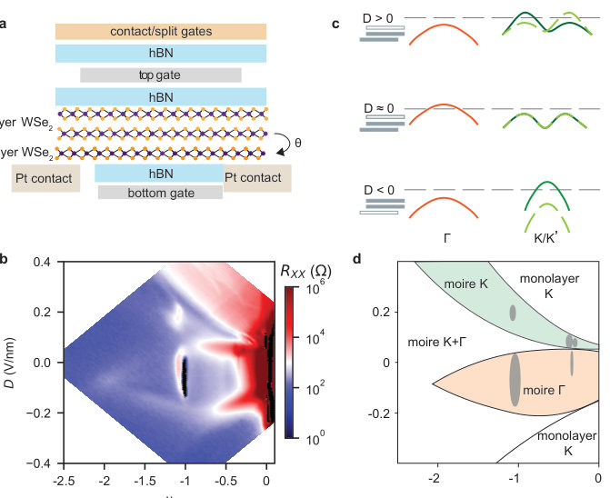
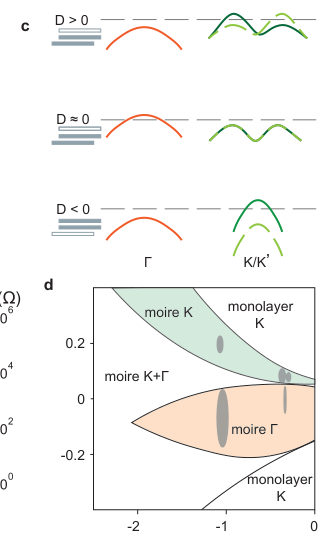
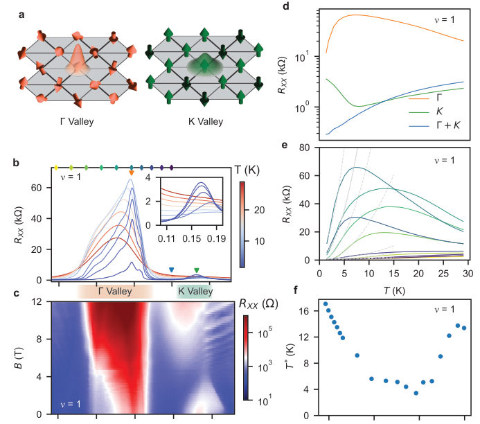
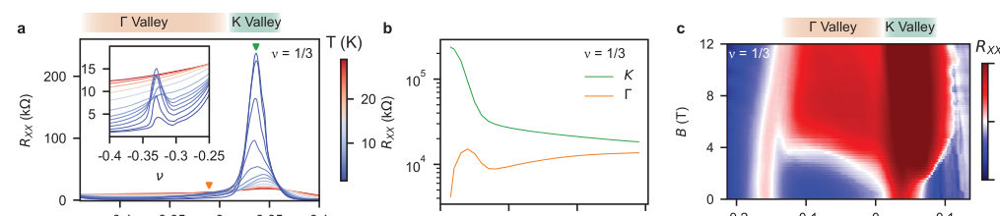
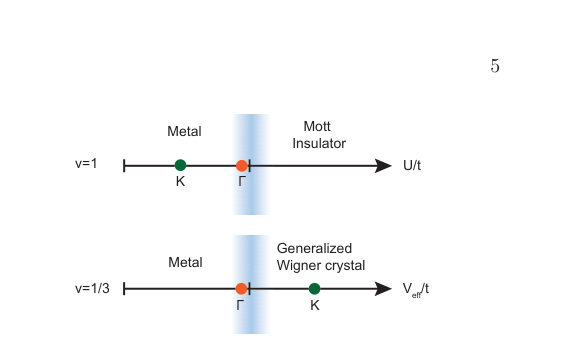
Summary. This work investigates how electronic orbital structure dictates quantum phases in twisted WSe$_2$ moiré heterostructures by comparing the K and $\Gamma$ valleys. The authors find that the $\Gamma$-valley is particularly susceptible to strong correlations, exhibiting behavior indicative of proximity to Mott transitions at multiple fillings. This highlights orbital character as a crucial tuning knob for accessing exotic correlated quantum states.
Why it may be interesting. The explicit link between orbital character (a structural property) and the resulting many-body physics (Mott vs. CDW) provides a powerful paradigm for understanding correlated phases in engineered quantum materials.
Main problem. The study contrasts how orbital degrees of freedom dictate quantum phases in moiré materials by comparing physics between the K and $\Gamma$ valleys.
Main result. The $\Gamma$-valley exhibits distinct correlated behavior, showing a pronounced Pomeranchuk effect near Mott transitions at both $\nu=1$ and $\nu=1/3$, unlike the K-valley's different insulating states.
Method. Theoretical analysis combined with experimental diagnostics using transport measurements (resistivity) as a function of filling factor, temperature, and magnetic field.
Model / system. The platform is twisted monolayer/bilayer WSe$_2$, where moiré physics is tuned via displacement fields. The comparison hinges on the distinct orbital character ($d_{x^2-y^2} \pm i d_{xy}$ vs. $d_{z^2}$) of the K and $\Gamma$ valleys.
Key observables. Resistivity ($R_{xx}$) as a function of moiré filling factor ($\nu$), displacement field ($D$), temperature ($T$), and magnetic field ($B$).
Important parameters / regimes. Moiré filling factors $\nu=1$ and $\nu=1/3$; correlation strength ratios like $U/t$.
Assumptions / limitations. The system is modeled using concepts from the Hubbard model, comparing different types of correlated insulating states (Mott vs. Wigner crystal).
Figures summary. Figures illustrate device structure and schematic phase diagrams showing valley population dependence on $D$ and $\nu$, alongside temperature-dependent resistivity curves contrasting K and $\Gamma$ valley behavior at fixed fillings.
Paper structure. The paper systematically compares the correlated states in both valleys across different filling factors, using transport measurements to diagnose proximity to Mott transitions ($\nu=1$) or Wigner crystallization ($\nu=1/3$).
Electronic orbital character plays a central role in determining electronic correlations, spin-orbit coupling, dimensionality, and ultimately the quantum phases of condensed-matter systems. Two-dimensional moiré materials have emerged as highly tunable platforms for exploring correlated phenomena, but the role of orbital degrees of freedom remains largely unexplored. Here, we identify twisted monolayer/bilayer WSe$_2$ as a platform in which displacement-field tuning enables moiré physics to be realized in both the $K$ and $Γ$ valleys. The distinct orbital characters of these valleys give rise to contrasting correlated phases at moiré filling factors $ν=1$ and $ν=1/3$. At $ν=1$, the $K$-valley state is a weak insulator, consistent with an antiferromagnetic state near a van Hove singularity in the intermediate-coupling regime, similar to that observed in twisted bilayer WSe$_2$. In contrast, the $Γ$-valley state exhibits a pronounced Pomeranchuk effect, consistent with proximity to a Mott transition. At $ν=1/3$, the $K$ valley hosts a robust generalized Wigner crystal, whereas the $Γ$-valley state lies near the crystallization boundary and again exhibits a Pomeranchuk effect, with localization enhanced by increasing temperature or magnetic field. Our work highlights the importance of orbital character in defining quantum phases in moiré systems, and identify the $Γ$ valley as a promising platform for exploring correlated phenomena near quantum phase transitions, where competing phases and enhanced fluctuations may give rise to unconventional phases.
Authors: Jin-Xing Hou, Yan-Song Song, James Jun He, Song-Bo Zhang
Type: theory · Category: other · PDF: https://arxiv.org/pdf/2607.18159v1
Analysis basis: full PDF text, analyzed in chunks
Topic relevance: Keldysh / 2PI / non-Gaussian methods 3/5 · exotic spin models in light-matter 3/5 · spintronics-quantum-optics interface 3/5 · driven-dissipative phase transition 2/5 · methods for driven-dissipative 2/5 · non-equilibrium dynamics 2/5 · Kondo & dissipative impurity 1/5 · analog quantum simulation 1/5 · interference shaping light 1/5 · non-equilibrium universality 1/5
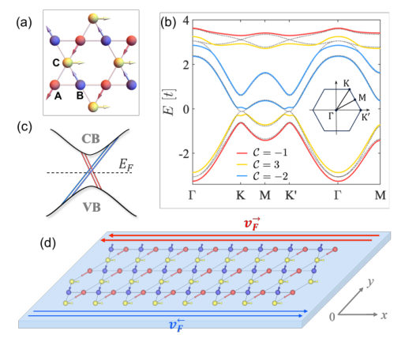
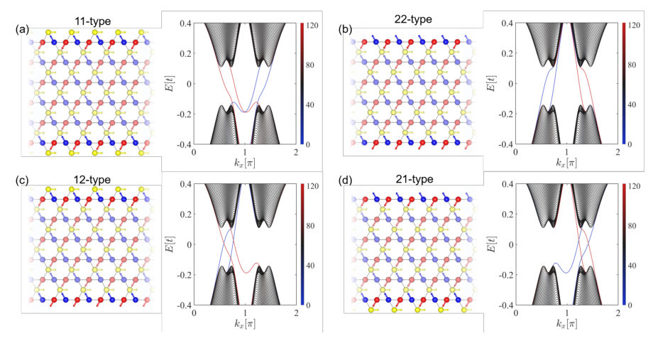
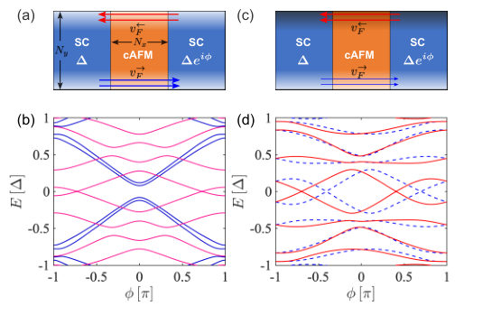
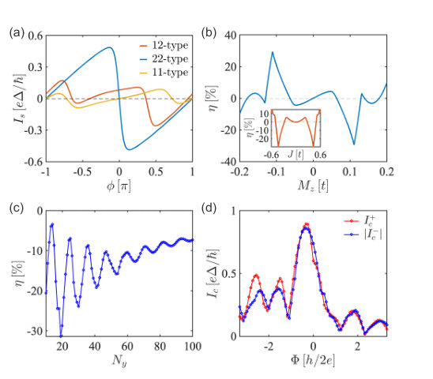
Summary. The paper demonstrates that nonreciprocal supercurrents can be engineered in chiral antiferromagnets not through bulk asymmetry, but by controlling the boundary termination of their topological edge states. By creating an asymmetric edge structure, researchers predict measurable effects like a Josephson diode effect and anomalous interference patterns, offering a new route for superconducting device design.
Why it may be interesting. This work provides a concrete, tunable mechanism—boundary engineering—to realize superconducting diodes using topological magnetic materials, which is highly relevant for developing novel quantum electronic components.
Main problem. The study aims to establish a microscopic, boundary-controlled mechanism for achieving nonreciprocal superconducting transport (superconducting diode effect), moving beyond reliance on bulk electronic asymmetries.
Main result. Boundary engineering via sublattice-dependent termination in chiral kagome antiferromagnets generates transverse edge state asymmetry, which directly causes observable nonreciprocal signatures like asymmetric Andreev spectra and a Josephson diode effect.
Method. The analysis employs Green function techniques to calculate Andreev bound-state spectra and supercurrents for superconducting Josephson junctions placed over the magnetic material.
Model / system. The model utilizes chiral kagome antiferromagnets, whose bulk gap is opened by breaking $\mathcal{T}\mathcal{M}_z$ symmetry (e.g., via spin canting or SOC). The key physics arises from the boundary termination asymmetry across the lattice sublattices.
Key observables. Asymmetric Andreev spectra ($E(\phi) eq E(-\phi)$), non-reciprocal supercurrents leading to unequal critical currents ($I_c^+ eq |I_c^-|$), and direction-dependent Fraunhofer interference patterns.
Important parameters / regimes. Out-of-plane spin canting magnitude ($M_z$), junction width ($N_y$), and the specific type of boundary termination (symmetric vs. asymmetric).
Assumptions / limitations. The Fermi level is assumed to lie within the bulk topological gap, allowing chiral edge states to dominate transport.
Figures summary. Figures illustrate the band structure showing Chern numbers and chiral edge states; they compare Andreev spectra for symmetric versus asymmetric terminations, demonstrating spectral asymmetry in the latter case. Further figures show non-reciprocal supercurrents and direction-dependent interference patterns.
Paper structure. The paper first establishes the theoretical framework using a Hamiltonian for cAFMs to open a topological gap. It then focuses on how boundary termination breaks symmetry, leading to distinct edge states. Finally, it applies this understanding to calculate measurable quantities in an SNS junction (Andreev spectra, CPR) to confirm the diode effect.
Nonreciprocal superconducting transport enables dissipationless rectification and has attracted considerable interest, yet its microscopic origin is typically sought in bulk electronic states. Here, we show that boundary-controlled chiral edge states in topological systems provide a simple yet largely overlooked mechanism for nonreciprocal superconducting transport. Focusing on chiral kagome antiferromagnets, we demonstrate that out-of-plane spin canting or spin-orbit coupling opens a high-Chern-number bulk gap, giving rise to multiple chiral edge modes. Strikingly, sublattice-dependent boundary termination selects a single-valley character for the edge states, leading to asymmetric edge spectra at opposite edges. This boundary asymmetry directly yields observable nonreciprocal signatures in Josephson junctions oriented transverse to the edges, including asymmetric Andreev spectra, Josephson diode effect, and anomalous Fraunhofer interference patterns. These findings broaden the microscopic understanding of superconducting nonreciprocity and highlight boundary engineering as a tunable route toward superconducting diode devices.
Authors: Shihao Zhang
Type: theory · Category: other · PDF: https://arxiv.org/pdf/2607.17049v1
Analysis basis: full PDF text, analyzed in chunks
Topic relevance: exotic spin models in light-matter 3/5 · methods for driven-dissipative 3/5 · non-equilibrium dynamics 3/5 · spintronics-quantum-optics interface 3/5 · analog quantum simulation 2/5 · driven-dissipative phase transition 2/5 · Keldysh / 2PI / non-Gaussian methods 1/5 · non-equilibrium universality 1/5
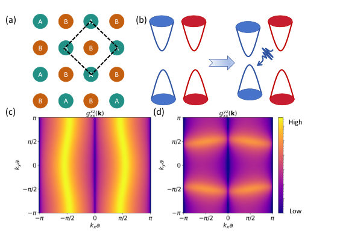
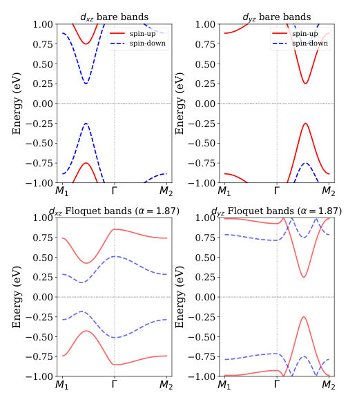
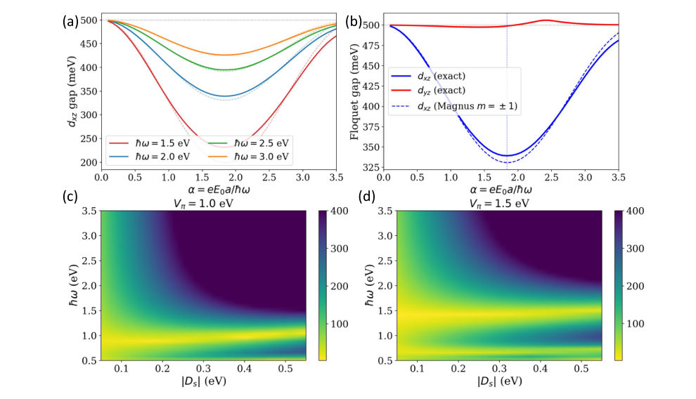
Summary. The paper demonstrates that in d-wave altermagnets, the quantum metric—a purely geometric quantity—can be uniquely probed using off-resonant laser light. By exploiting the system's inherent vanishing Berry curvature, the authors show that the resulting band gap renormalization is entirely dictated by this quantum metric, offering a novel diagnostic tool for condensed matter physics.
Why it may be interesting. This work provides a clean, tunable platform (d-wave altermagnets) where complex geometric effects can be isolated by symmetry constraints, making it highly relevant for understanding light-matter interaction in topological/geometric materials.
Main problem. The central challenge is isolating the pure quantum metric from the Berry curvature when analyzing geometric properties in quantum materials.
Main result. In d-wave altermagnets, light-induced driving creates a ferrovalley state where the gap renormalization is found to be governed exclusively by the quantum metric, with no contribution from the Berry curvature.
Method. The authors use the Magnus expansion and exact Floquet diagonalization on a tight-binding model subjected to time-periodic laser fields.
Model / system. The system is modeled using d-wave altermagnets (a class of materials whose real Hamiltonian has zero Berry curvature) described by an effective two-orbital tight-binding Hamiltonian.
Key observables. Quantum metric ($g_{\mu u}$), ferrovalley gap difference ($\Delta E_{xz} - ext{yz}$), and the resulting band-gap renormalization ($\Delta E_{ ext{Magnus}}$).
Important parameters / regimes. Light polarization, driving amplitude ($\alpha$), and orbital hopping anisotropy ($V_\pi/V_\delta$).
Assumptions / limitations. The analysis relies on the Magnus expansion converging for certain parameters, and that the system Hamiltonian is real, leading to vanishing Berry curvature.
Figures summary. Figures schematically show how light driving selectively reduces the $d_{xz}$ gap while leaving the $d_{yz}$ gap largely unchanged, establishing the ferrovalley state. They also compare bare vs. Floquet-driven electronic structures.
Paper structure. The paper establishes the theoretical framework by noting that vanishing Berry curvature simplifies the coupling mechanism. It then derives the gap renormalization using Magnus theory, showing its direct proportionality to $g_{\mu u}$, and finally discusses the experimental signatures via polarization dependence.
Isolating the quantum metric from the Berry curvature remains a central challenge in quantum materials, as the two geometric quantities nearly always coexist and their contributions are difficult to disentangle. We show that d-wave altermagnets, whose real Hamiltonian possesses strictly vanishing Berry curvature, constitute an ideal platform for overcoming this obstacle. Using the Magnus expansion and exact Floquet diagonalization, we demonstrate that linearly polarized off-resonant light drives an orbital-selective ferrovalley phase through a purely quantum-metric--mediated band-gap renormalization, with no Berry curvature contribution at any order. The orbital selectivity originates from the hopping anisotropy, which generates a pronounced metric anisotropy between the $d_{xz}$ and $d_{yz}$ orbitals, and the gap reduction is expressed analytically in terms of the quantum metric. The resulting valley gap difference provides a direct, quantitative measure of the quantum metric, accessible to spin-resolved ARPES and optical pump-probe spectroscopy. This establishes d-wave altermagnets as a pristine, tunable platform in which quantum metric effects can be isolated, controlled by light polarization, and read out through valley polarization.
Authors: Alireza Seifi, Sheikh Akbar, Yanzhou Ji
Type: theory · Category: statistical mechanics · PDF: https://arxiv.org/pdf/2607.18172v1
Analysis basis: full PDF text, analyzed in chunks
Topic relevance: driven-dissipative phase transition 3/5 · methods for driven-dissipative 3/5 · non-equilibrium dynamics 3/5 · Keldysh / 2PI / non-Gaussian methods 2/5 · non-equilibrium universality 2/5 · Frenkel-Kontorova 1/5 · analog quantum simulation 1/5 · correlated / nonlocal dissipation 1/5
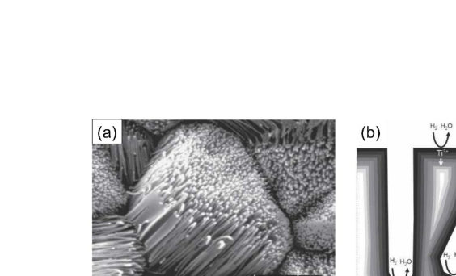
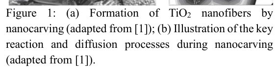
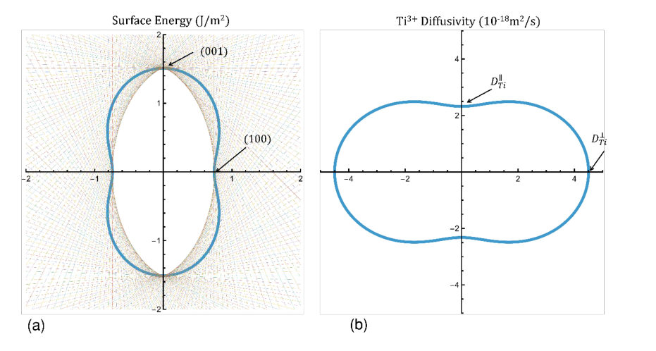
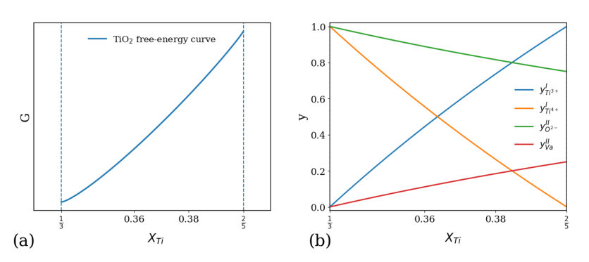
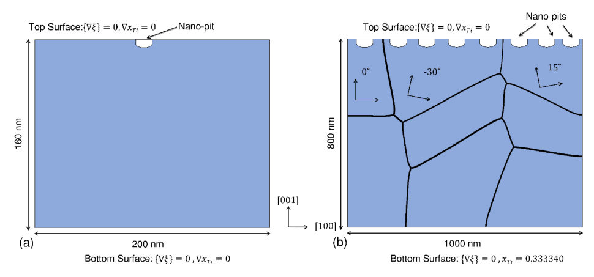
Summary. This work develops a detailed 2D phase-field model to simulate how TiO2 undergoes reductive nanocarving using hydrogen gas. By incorporating anisotropic factors into the model, the authors systematically determine that reaction rate anisotropy is the primary physical mechanism responsible for forming highly directional nanowire structures observed in experiments.
Why it may be interesting. While focused on materials science, the use of complex coupled partial differential equations (phase-field modeling) to describe non-equilibrium thermodynamic processes and microstructure evolution is highly relevant to many-body dynamics simulations in condensed matter theory.
Main problem. The study aims to understand the origin of the strongly anisotropic nanowire morphology observed during TiO2 nanocarving via reductive reactions with hydrogen-bearing gases.
Main result. Systematic simulations suggest that strong reaction rate anisotropy is the dominant factor controlling the formation of experimentally observed nanowire morphologies.
Method. A 2-D phase-field model is formulated to simulate the coupled processes of TiO2 reduction, Ti3+ diffusion, and anisotropic surface energy effects during nanocarving.
Model / system. The physical system is TiO2 undergoing reductive carving using H2-bearing gases. The model employs a sublattice approach for nonstoichiometric rutile TiO2, governed by coupled phase-field equations incorporating reaction kinetics and diffusion.
Key observables. Nanocarving morphology (e.g., aspect ratio), local Ti composition ($x_{ ext{Ti}}$), and the overall reduction free energy ($\Delta G_r$).
Important parameters / regimes. Anisotropy factors in surface energy, diffusivity, and reaction rate; gas partial pressures ($ ext{p}{ ext{H}_2 ext{O}}/ ext{p}$); temperature ($700^\circ ext{C}-1000 ext{ K}$).}_2
Assumptions / limitations. The model assumes that grain growth is negligible and that carving initiates at the surface and stops at Grain Boundaries.
Figures summary. Figures illustrate TiO2 nanofiber formation, aspect ratio evolution under varying anisotropies (Isotropic vs. Interfacial Energy Anisotropy), and thermodynamic maps showing reduction favorability ($\Delta G_r$) as a function of composition and gas ratio.
Paper structure. The paper builds thermodynamically by first defining the Gibbs free energy using a sublattice model, deriving chemical potentials for all species, then calculating the overall reaction free energy change ($\Delta G_r$), and finally coupling this into a 2-D phase-field simulation to track morphology evolution.
TiO2 nanocrystals can be fabricated by carving the TiO2 bulk polycrystals using reductive H2-bearing gases, yielding single-crystal [001] nanowire arrays. However, the origin of the strongly anisotropic nanowire morphology during nanocarving remains largely unexplored. In this study, we formulate a 2-D phase-field model to investigate the TiO2 morphology evolution during nanocarving processes. The model incorporates TiO2 reduction reaction, Ti3+ diffusion, and anisotropies in surface energy, diffusivity and reaction rate. Through systematic simulations in both single- and poly-crystals, we elucidate the roles of different anisotropy factors in nanocrystal morphologies at different carving stages, identifying the strong reaction rate anisotropy as the dominant factor for experimentally observed nanowire morphologies. We further explore the effect of grain misorientation angle, generating a nanocarving morphology map to guide grain orientation control. This study provides insights into microstructure evolution mechanisms during nanocarving and guidances for related microstructure control.
Authors: Atsushi Yamada, Kazuhiro Yabana
Type: theory · Category: other · PDF: https://arxiv.org/pdf/2607.17109v1
Analysis basis: full PDF text, analyzed in chunks
Topic relevance: methods for driven-dissipative 3/5 · non-equilibrium dynamics 3/5 · Keldysh / 2PI / non-Gaussian methods 2/5 · driven-dissipative phase transition 2/5 · Kondo & dissipative impurity 1/5 · analog quantum simulation 1/5 · correlated / nonlocal dissipation 1/5 · entanglement & information structure 1/5 · non-equilibrium universality 1/5
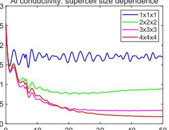
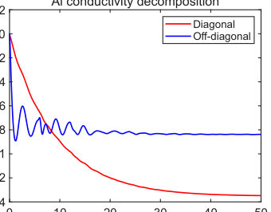
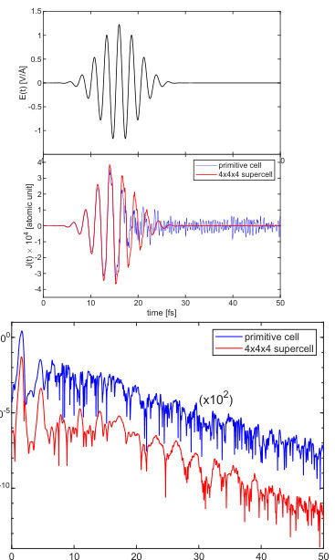
Summary. This work microscopically investigates how electron-phonon coupling causes dephasing in crystalline solids using real-time TDDFT. By comparing supercell and primitive-cell calculations, the authors demonstrate that damping arises mainly from population dynamics rather than coherence decay. This provides a crucial theoretical refinement for modeling open quantum systems in condensed matter.
Why it may be interesting. It provides a rigorous, first-principles understanding of decoherence in solids, showing that complex many-body effects can emerge from simple population dynamics rather than just coherence decay, which is highly relevant for open quantum systems modeling.
Main problem. The paper aims to determine the microscopic origin of dephasing (decoherence) in solids, specifically attributing it to electron-phonon interactions.
Main result. Dephasing is shown to be governed primarily by population dynamics (diagonal elements) rather than off-diagonal coherence decay when analyzed via a primitive-cell density matrix. Furthermore, supercell calculations naturally reproduce expected damping timescales without needing empirical parameters.
Method. The study employs real-time Time-Dependent Density Functional Theory (rt-TDDFT) within the Williams-Lax formalism, propagating dynamics using supercells with displaced ionic positions.
Model / system. The system is solid-state materials (metals like Al and dielectrics like Si), where electron dynamics are coupled to lattice vibrations (phonons). The analysis compares results from large supercells versus the primitive cell representation.
Key observables. Time-dependent conductivity $\sigma(t)$, Drude-like damping, and spectral features in High-Harmonic Generation (HHG) spectra.
Important parameters / regimes. Phonon amplitudes sampled from zero-point motion; temperature (e.g., 300 K); supercell sizes ($2\times2\times2$ up to $4\times4\times4$).
Assumptions / limitations. The adiabatic approximation is used, treating ionic positions as frozen during the femtosecond electron dynamics.
Figures summary. Figures compare $\sigma(t)$ for different supercell sizes in Al and Si, demonstrating exponential damping in larger cells. HHG spectra comparisons show that supercells yield cleaner harmonic peaks than primitive-cell calculations.
Paper structure. The paper establishes the problem using rt-TDDFT/Williams-Lax framework, analyzes linear response (conductivity) by comparing supercell vs. primitive cell results to pinpoint the source of damping, and extends the analysis to nonlinear responses like HHG.
Electron-phonon interactions provide a microscopic origin of effective dephasing in solids within real -time TDDFT via a time-domain Williams-Lax framework. In metals, Drude -like damping emerges from a single disordered configuration; in dielectrics, the same mechanism yields clean high-harmonic spectra without introducing ultrashort phenomenological dephasing times. Mapping supercell dynamics onto a primitive-cell density matrix reveals that dephasing is governed primarily by population dynamics (diagonal elements) rather than by the decay of off-diagonal coherence.
Authors: Lijie Liu, Mingbo Dou, Xu Chen, Xianjie Wang, M. Ye. Zhuravlev, A. V. Nikolaev, L. L. Tao
Type: theory · Category: other · PDF: https://arxiv.org/pdf/2607.17807v1
Analysis basis: full PDF text, analyzed in chunks
Topic relevance: Keldysh / 2PI / non-Gaussian methods 3/5 · methods for driven-dissipative 3/5 · spintronics-quantum-optics interface 3/5 · non-equilibrium dynamics 2/5 · correlated / nonlocal dissipation 1/5 · driven-dissipative phase transition 1/5 · exotic spin models in light-matter 1/5
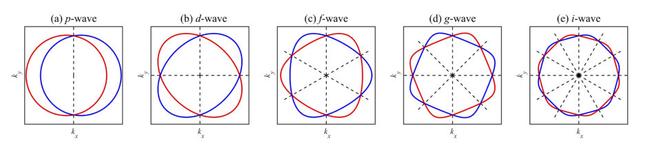
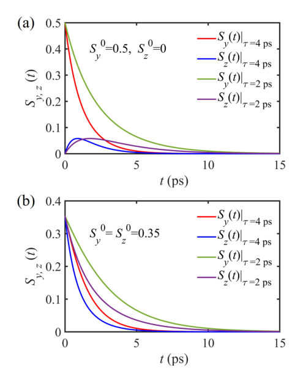
Summary. This paper theoretically investigates spin relaxation in various types of X-wave magnets ($p, d, f, g, i$) relevant to spintronics. Using the D'yakonov-Perel' mechanism, the authors calculate the spin decoherence rates, finding distinct symmetry behaviors across different wave symmetries. The results provide a deeper understanding of how material structure dictates spin lifetime in these advanced magnetic systems.
Why it may be interesting. This work provides fundamental theoretical insights into spin relaxation dynamics in novel magnetic materials using advanced transport theory, which is crucial for designing next-generation spintronic devices.
Main problem. The study investigates spin relaxation mechanisms, which cause spin decoherence and limit the spin lifetime in spintronic devices.
Main result. The authors found that for $d$-, $f$-, $g$-, and $i$-wave magnets, the reciprocal spin-relaxation-time matrices are anisotropic and diagonal when the Néel vector is along [001].
Method. The analysis employs the D'yakonov-Perel' mechanism within a kinetic equation framework, solving for the tensor of reciprocal spin relaxation times.
Model / system. The system models 2D $X$-wave magnets ($p, d, f, g, i$) incorporating Rashba spin-orbit coupling and an effective Zeeman term. The dynamics are governed by a kinetic equation derived from Boltzmann transport theory.
Key observables. The tensor of reciprocal spin relaxation times (1/tau_ij) and the temporal evolution of the averaged spin vector S(t).
Important parameters / regimes. Rashba SOC strength ($\alpha$), momentum relaxation time ($ au$), and altermagnetic spin-split strengths ($\Delta$).
Assumptions / limitations. The analysis focuses on the $q=0$ limit, describing uniform distribution and coherent precession; it also assumes a specific Néel vector direction for initial calculations.
Figures summary. Figure 1 schematically shows Fermi contours for the five wave types, indicating node lines where spin splitting vanishes. Figure 2 illustrates the temporal decay of spin components for the $p$-wave magnet.
Paper structure. The paper systematically calculates the general matrix form of the relaxation tensor ($D_{SO}$), applies this to specific symmetry cases ($d, f, g, i$ vs. $p$), derives explicit time evolution solutions for the $p$-wave case, and concludes with detailed calculations for correlation functions in $g$- and $i$-wave magnets.
Spin relaxation results in the spin decoherence and a finite spin lifetime, which are detrimental to spintronic devices. To achieve a long spin lifetime desirable for spintronic devices, elucidating the spin relaxation mechanism and factors influencing the spin lifetime is of vital importance. Here, we investigate the spin relaxation in $X$-wave magnets ($X=p, d, f, g, i$) with Rashba spin-orbit coupling within the framework of D'yakonov-Perel' mechanism. We calculate the general matrix of the spin relaxation time for an arbitrary Néel vector direction of the $X$-wave magnet. As an illustration, we study the spin relaxation for the Néel vector along the $[001]$ direction. It is found that the reciprocal spin-relaxation-time matrices are anisotropic and diagonal for the $d$-, $f$-, $g$- and $i$-wave magnets. For the $p$-wave magnet, we derive the analytical expressions for the temporal evolution of spins. Moreover, the spin relaxation rate is proportional to the momentum relaxation time, Rashba and altermagnetic spin-split strengths for all $X$-wave magnets. Our results shine more light on the fundamental understanding of the spin relaxation mechanism in $X$-wave magnets.
Authors: Alberto M. Ruiz, Cuiju Yu, Diego López-Alcalá, Jose L. Lado, Adolfo O. Fumega, José J. Baldoví
Type: theory · Category: other · PDF: https://arxiv.org/pdf/2607.16856v1
Analysis basis: full PDF text, analyzed in chunks
Topic relevance: exotic spin models in light-matter 3/5 · spintronics-quantum-optics interface 3/5 · driven-dissipative phase transition 2/5 · Frenkel-Kontorova 1/5 · Keldysh / 2PI / non-Gaussian methods 1/5 · analog quantum simulation 1/5 · methods for driven-dissipative 1/5 · non-equilibrium dynamics 1/5
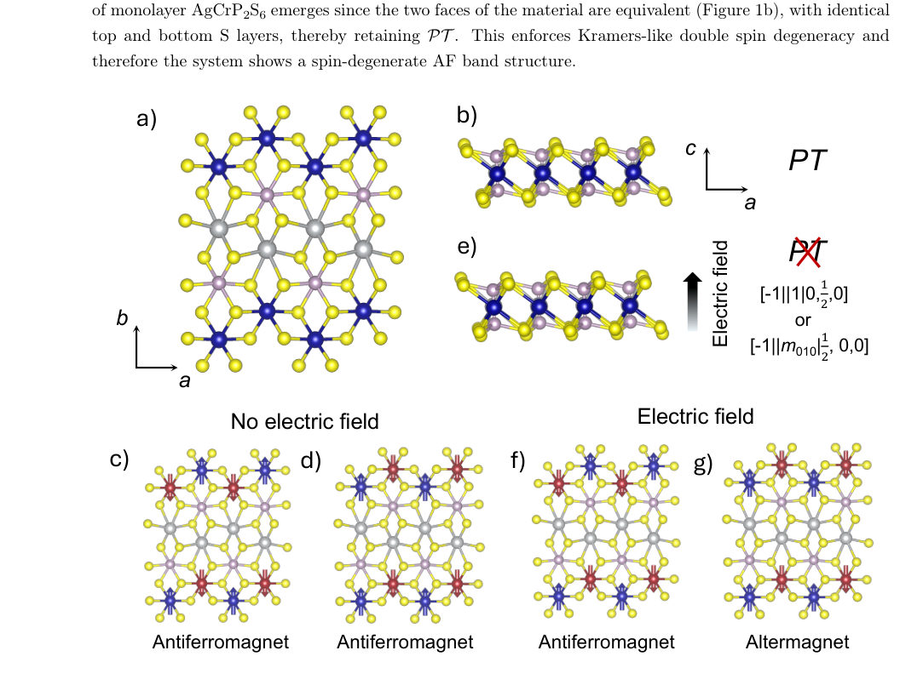
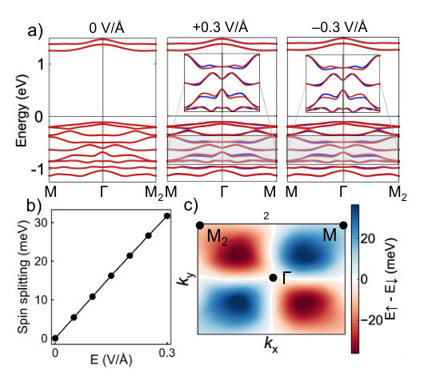
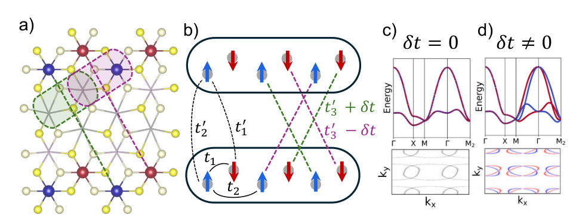
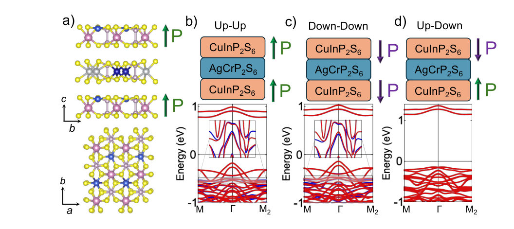
Summary. This work establishes $ ext{AgCrP}_2 ext{S}_6$ as a novel platform for studying altermagnetism in quasi-1D magnets. By applying an out-of-plane electric field, the authors demonstrate electrical control over the magnetic state, inducing a measurable d-wave spin splitting. This mechanism is further generalized using chemical and ferroelectric interfaces to achieve polarization-controlled magnetism.
Why it may be interesting. While focused on condensed matter magnetism, the concept of electrically controlling spin splitting via symmetry breaking is highly relevant to quantum materials research that seeks electrical control over quantum states, bridging concepts from spintronics and topological physics.
Main problem. The study aims to extend the understanding of altermagnetism, a momentum-dependent spin splitting, from 2D/3D systems to quasi-one-dimensional (quasi-1D) magnets and demonstrate its electrical control.
Main result. The authors show that an out-of-plane electric field can induce a nonrelativistic d-wave altermagnetic spin texture in $ ext{AgCrP}_2 ext{S}_6$, which is also controllable via chemical substitution or ferroelectric interfaces.
Method. The research combines first-principles calculations (DFT) with symmetry analysis and the construction of an effective tight-binding model to rationalize the magnetic response.
Model / system. The primary system is monolayer $ ext{AgCrP}_2 ext{S}_6$, which features quasi-1D antiferromagnetic chains coupled in a 2D lattice. The control mechanisms involve applying external electric fields, performing Janus substitutions, or interfacing with ferroelectric materials.
Key observables. Momentum-dependent spin splitting magnitude (up to $32 ext{ meV}$), sign reversal of the splitting upon field reversal, and confirmation of a d-wave texture in the band structure.
Important parameters / regimes. Out-of-plane electric field strength ($E_{\perp}$), anisotropic third-neighbor interchain hopping ($\delta t$), and polarization state (e.g., up-up vs. down-down).
Assumptions / limitations. The analysis relies on DFT calculations and effective tight-binding models, focusing specifically on the symmetry-allowed ferromagnetic interchain alignment for altermagnetism.
Figures summary. Figures illustrate the structural changes under electric fields, showing band structures that transition from spin-degenerate to exhibit a d-wave spin splitting dependent on field polarity. Momentum maps confirm the d-wave nature of the texture.
Paper structure. The paper establishes the theoretical framework by analyzing symmetry requirements for altermagnetism in quasi-1D systems. It then details the electrical control mechanism using $ ext{AgCrP}_2 ext{S}_6$ under an external field, followed by extensions to chemical (Janus) and interfacial engineering with ferroelectrics.
Altermagnetism is a collinear magnetic state characterized by momentum-dependent spin splitting in fully compensated materials. While widely investigated in systems governed by three- or two-dimensional exchange interactions, its extension to quasi-one-dimensional magnets remains almost unexplored. Focusing on the experimentally established AgCrP$_2$S$_6$ van der Waals magnet, we demonstrate that antiferromagnetic chains embedded in a two-dimensional lattice provide a general route to altermagnetism. Combining first-principles calculations and spin-space-group analysis, we show that out-of-plane symmetry breaking can generate a nonrelativistic d-wave spin splitting. An external out-of-plane electric field validates this mechanism, where the induced splitting increases linearly with field strength and reverses sign with field direction. We rationalize such behaviour by constructing an effective tight-binding model, which links the altermagnetic response to anisotropic third-neighbor interchain hoppings. Additionally, we show that Janus substitution also induces a d-wave spin texture, while ferroelectric interfacing with CuInP$_2$S$_6$ enables polarization-controlled spin-split bands in a fully compensated ferrimagnetic state. Our results establish quasi-one-dimensional antiferromagnets as building blocks for altermagnetism.
Authors: Hernan Aguirre, Hernan L. Calvo, Eduardo M. Perassi
Type: theory · Category: other · PDF: https://arxiv.org/pdf/2607.18214v1
Analysis basis: full PDF text, analyzed in chunks
Topic relevance: Kondo & dissipative impurity 3/5 · methods for driven-dissipative 3/5 · non-equilibrium dynamics 2/5 · Keldysh / 2PI / non-Gaussian methods 1/5 · analog quantum simulation 1/5 · driven-dissipative phase transition 1/5
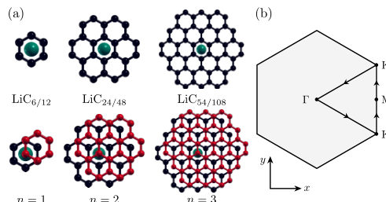
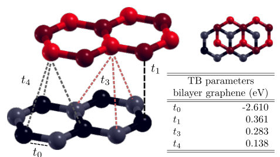
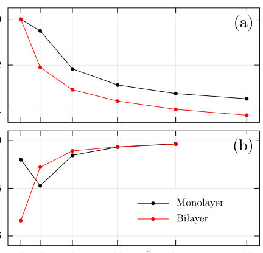
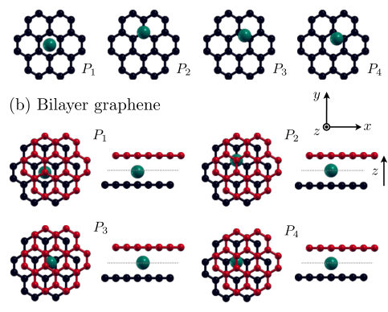
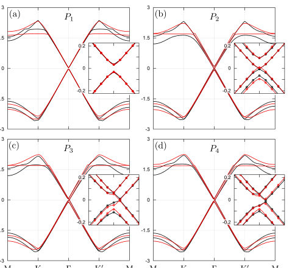
Summary. This work develops and validates a position-dependent tight-binding model to study how adsorbed or intercalated Lithium ions alter the electronic structure of graphene (MLG and BLG). By fitting parameters to DFT results, the authors accurately predict band modifications, revealing that Li introduces localized perturbations whose effects diminish as the supercell size increases. This provides an efficient framework for modeling ion transport in graphitic electrodes.
Why it may be interesting. While focused on condensed matter electronics, the development of an accurate, transferable tight-binding model parameterized by first principles methods is a powerful tool for simulating open quantum systems where local perturbations (like impurities) drive transport phenomena.
Main problem. The study investigates how Li adsorption on monolayer graphene (MLG) and intercalation within bilayer graphene (BLG) modifies their low-energy electronic properties.
Main result. The developed position-dependent tight-binding model accurately reproduces the band structure, showing that the impurity perturbation is strongly localized and decreases with supercell size.
Method. A semi-empirical, position-dependent tight-binding (TB) model is constructed and parameterized by fitting its eigenvalues to results obtained from Density Functional Theory (DFT) calculations.
Model / system. The system involves MLG and AB-stacked BLG substrates doped with Li impurities. The Hamiltonian incorporates site-specific couplings derived from DFT fittings, allowing for the study of impurity effects on electronic bands near the Fermi level.
Key observables. Electronic band structure near the Fermi level, symmetry breakings, intervalley mixing, and band-gap openings.
Important parameters / regimes. Supercell size ($n$), Li onsite energy ($\epsilon_{ ext{Li}}$), and various hopping parameters derived from DFT fitting.
Assumptions / limitations. The TB model assumes parameter efficiency by keeping the number of fitting variables constant regardless of impurity position or supercell size.
Figures summary. Figures illustrate supercells for Li adsorption/intercalation on MLG and BLG, high-symmetry k-paths in the Brillouin zone, and schematics detailing the electronic structure analysis.
Paper structure. The paper develops a general TB framework, parameterizes it using DFT calculations across varying supercell sizes, analyzes the resulting band structures for both MLG and BLG, and discusses the physical implications of the localized impurity potential.
Lithium adsorption and intercalation can significantly modify the low-energy electronic properties of graphene-based materials, making their characterization relevant for understanding Li-ion transport and storage in graphitic electrodes. In this work, we investigate the electronic structure of a Li ion adsorbed on monolayer graphene (MLG) and intercalated within AB-stacked bilayer graphene (BLG). To this end, we develop a semi-empirical tight-binding model that incorporates Li-position dependence. Its parameters are determined by fitting to density-functional-theory calculations for different configurations, heights, and supercell sizes. The obtained model accurately reproduces the electronic bands near the Fermi level for both MLG and BLG and provides a transparent interpretation of the impurity-induced modifications in terms of symmetry breakings, intervalley mixing, and band-gap openings. We find that the perturbation introduced by the Li ion is strongly localized and that its effect decreases with increasing supercell size. The fitted parameters further reveal systematic differences between MLG and BLG in the spatial profile of the impurity potential. The obtained results provide an efficient framework for studying dilute Li impurities and constitute a useful starting point for future investigations of Li diffusion and impurity-induced transport phenomena in graphene-based materials.
Authors: Zachary Rex, Bách Ph\d{a}m Xuân, Gerald Curran, Ivan Biaggio
Type: both · Category: other · PDF: https://arxiv.org/pdf/2607.16461v1
Analysis basis: full PDF text, analyzed in chunks
Topic relevance: methods for driven-dissipative 3/5 · correlated / nonlocal dissipation 2/5 · non-equilibrium dynamics 2/5 · Keldysh / 2PI / non-Gaussian methods 1/5 · driven-dissipative phase transition 1/5 · interference shaping light 1/5 · quantum optics experiment 1/5
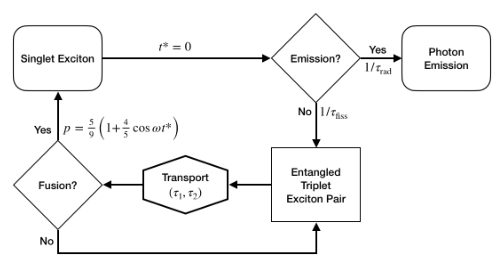
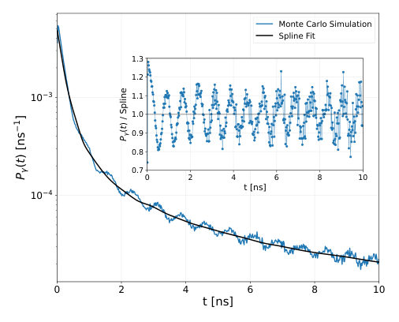
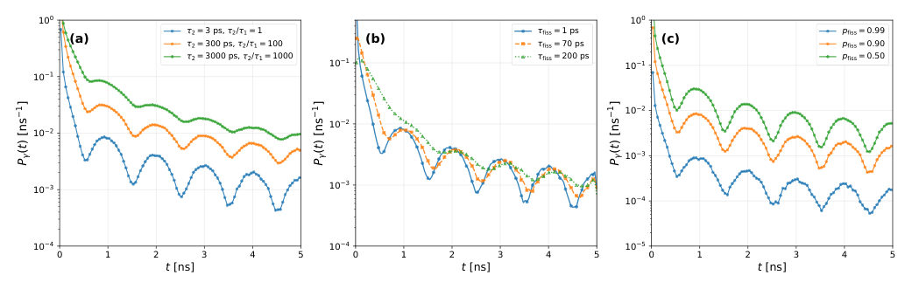
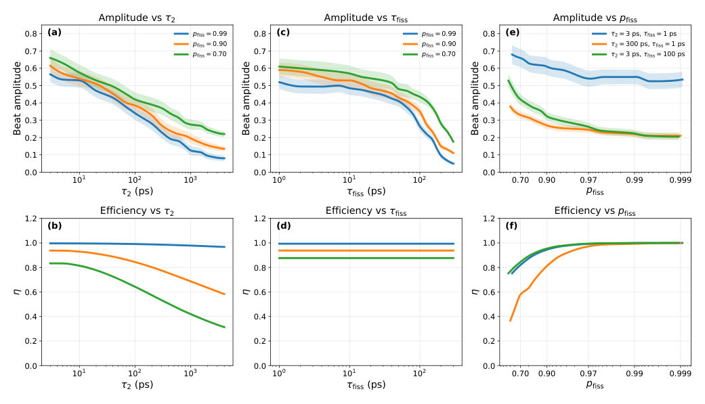
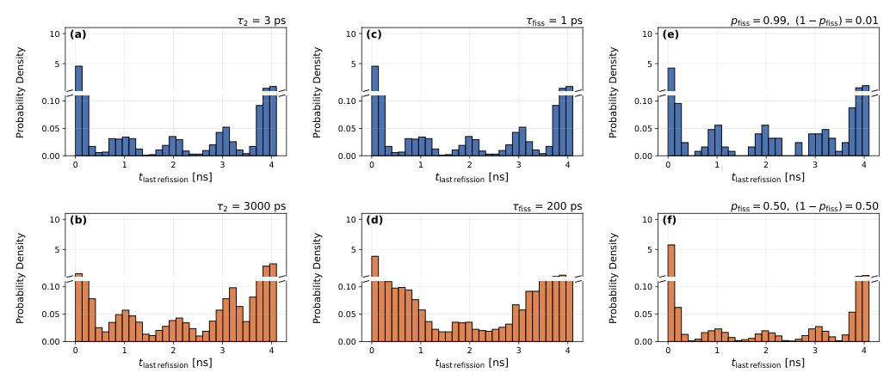
Summary. The authors developed a comprehensive theoretical model using Kinetic Monte Carlo simulations to analyze fluorescence quantum beats arising from triplet-pair fusion in organic crystals. By comparing predictions against experimental measurements in rubrene and tetracene, they quantitatively determined key microscopic parameters like hopping times and fission timescales. This work establishes quantum beat amplitudes as a powerful diagnostic tool for understanding exciton dynamics in condensed matter systems.
Why it may be interesting. This work provides a detailed, quantitative link between macroscopic optical signatures (quantum beats) and microscopic parameters governing open quantum systems dynamics, specifically exciton transport and recombination pathways.
Main problem. The study derives a quantitative theory for the amplitude of fluorescence quantum beats resulting from geminate triplet-pair fusion in organic semiconductors like rubrene and tetracene.
Main result. The model successfully reproduces experimental measurements, showing that the beat amplitude is governed by the interplay between stochastic transport dynamics (e.g., hopping time) and coherent processes (e.g., singlet fission time).
Method. Kinetic Monte Carlo simulations are used to track the complex sequence of exciton events—fission, triplet hopping, re-encounter, and fusion—to calculate the time-dependent photon emission probability.
Model / system. The system involves photoexcitation leading to singlet fission into entangled triplet excitons. The dynamics are modeled using a framework incorporating anisotropic triplet transport (random walks) and time-dependent fusion probabilities.
Key observables. Quantum beat amplitude, time-dependent photoluminescence decay $P_{\gamma}(t)$, and singlet-fission efficiency ($\eta_{ ext{SF}}$).
Important parameters / regimes. Singlet fission time ($ au_{ ext{fiss}}$), anisotropic hopping times ($ au_1, au_2$), and the probability of fusion initiation ($p_{ ext{f.a.}}$).
Assumptions / limitations. The KMC implementation assumes constant probabilities per unit time for all competing events; analysis is performed in the high magnetic field limit to exclude transport-induced decoherence.
Figures summary. Figures compare simulated $P_{\gamma}(t)$ and quantum beat amplitudes against experimental data for rubrene and tetracene, demonstrating parameter fitting for $ au_2$ (rubrene) and $ au_{ ext{fiss}}$ (tetracene).
Paper structure. The paper develops a theoretical framework based on KMC simulations to model the full exciton cycle. It then applies this theory by comparing predicted quantum beat amplitudes against time-resolved photoluminescence measurements in both rubrene and tetracene.
We derive the amplitude of quantum-beats in the fluorescence from geminate triplet-exciton fusion in rubrene and tetracene from the full set of parameters that characterize triplet exciton dynamics. We find that the amplitude depends on the fission time in tetracene, but does not do so in rubrene, where it is determined by the dimensionality of triplet transport. Kinetic Monte Carlo simulations reproduce the experimental data in both materials, for a fission time of the order of 200 ps and isotropic triplet transport int tetracene, and for a triplet hopping time along the herringbone axis of 250 ps and anisotropic transport in rubrene.
Authors: Xinhong Zhou, T. H. Hansson, Varsha Subramanyan, Qing-Dong Jiang
Type: theory · Category: other · PDF: https://arxiv.org/pdf/2607.17361v1
Analysis basis: full PDF text, analyzed in chunks
Topic relevance: Keldysh / 2PI / non-Gaussian methods 3/5 · analog quantum simulation 2/5 · driven-dissipative phase transition 2/5 · Kondo & dissipative impurity 1/5 · methods for driven-dissipative 1/5 · non-equilibrium dynamics 1/5
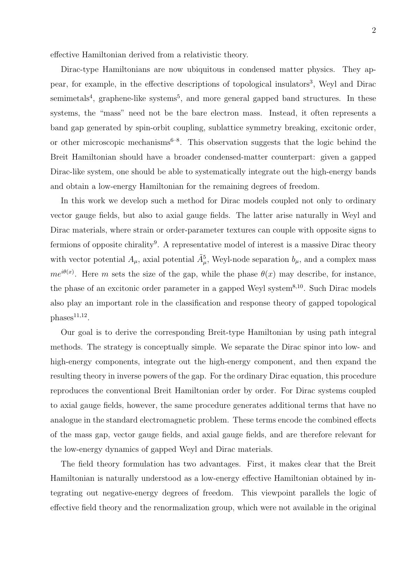
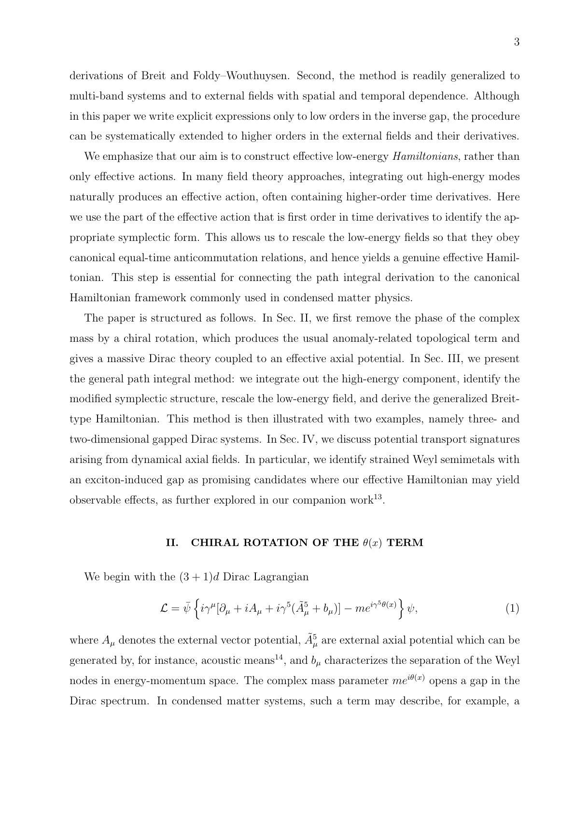
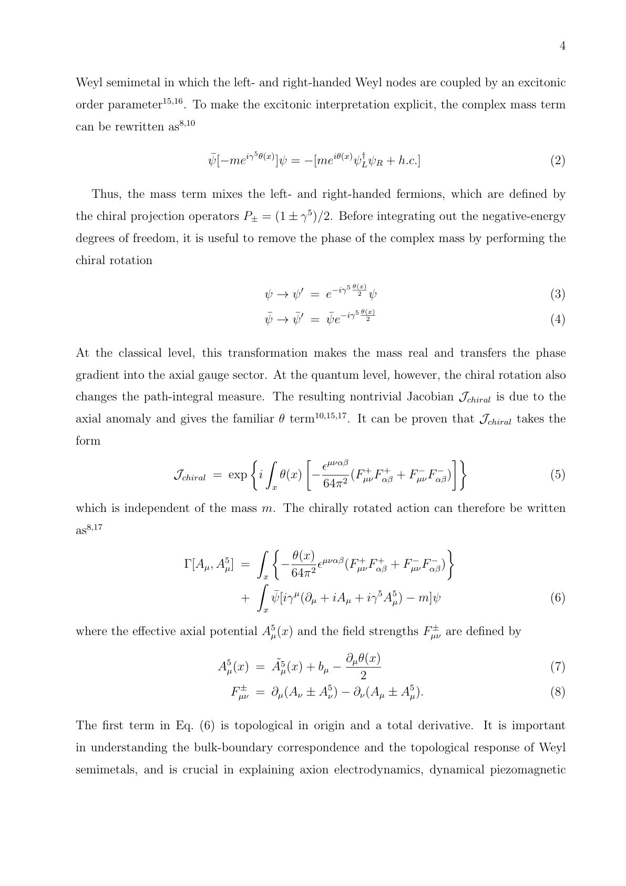
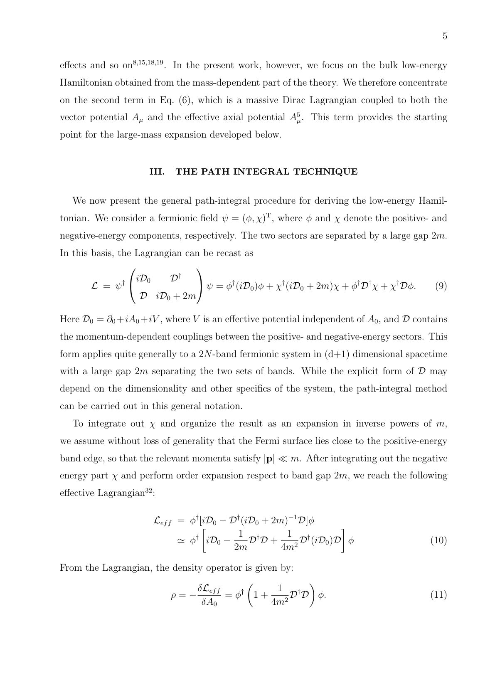
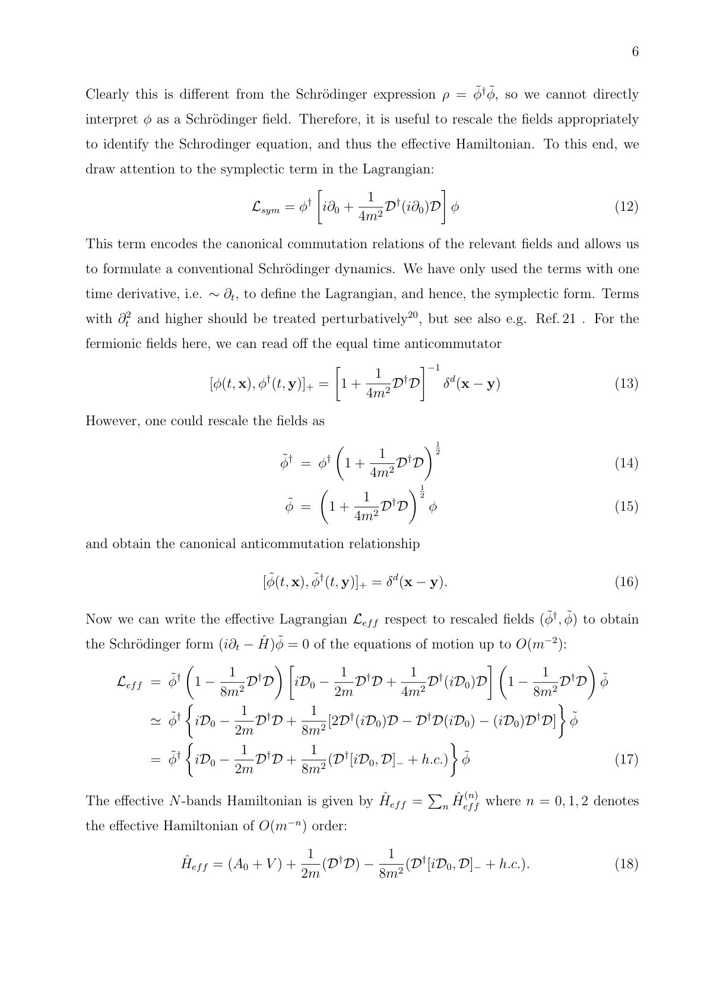
Summary. This work presents a systematic field theory method to derive effective Breit-type Hamiltonians for gapped Dirac systems interacting with both vector and axial gauge fields. By integrating out high-energy degrees of freedom, the authors establish a canonical low-energy description. The key finding is that axial couplings introduce unique terms into the Hamiltonian not found in standard electromagnetism.
Why it may be interesting. The rigorous derivation of low-energy Hamiltonians from continuum field theories is fundamental for understanding effective models in condensed matter physics, especially when topological or chiral symmetries are involved.
Main problem. The paper develops a field theory approach to derive effective, low-energy Breit-type Hamiltonians for gapped Dirac systems coupled to both vector and axial gauge fields.
Main result. It shows that while the method reproduces standard results for ordinary Dirac equations, the inclusion of axial fields introduces novel vector-axial couplings into the resulting Hamiltonian.
Method. The authors use a path-integral formalism, integrating out high-energy components of the Dirac spinor and expanding in inverse powers of the mass gap to obtain a canonical Schrödinger description.
Model / system. The model involves gapped Dirac fermions coupled to external vector (A_mu) and axial (A^5_mu) gauge potentials, studied in both 3+1 and 2+1 dimensions. The effective theory is derived by treating the mass gap as the large energy scale.
Key observables. The effective Hamiltonian ($\hat{H}_{ ext{eff}}$), particularly the novel vector-axial coupling terms when axial fields are present, and potential Hall-type transport currents.
Important parameters / regimes. The mass gap ($m$), the external gauge potentials ($A_\mu, A^5_\mu$), and dimensionality (2D vs 3D).
Assumptions / limitations. The derivation assumes that the mass gap is the large energy scale and that relevant momenta are much smaller than this gap. Field rescaling based on symplectic structure is crucial for canonical quantization.
Paper structure. The paper systematically develops the field theory, first deriving the effective action by integrating out high-energy modes, then performing necessary field rescalings to obtain a canonical Hamiltonian, and finally applying this procedure to specific dimensions (3+1D and 2+1D) to analyze the resulting couplings.
We develop a path-integral-based field theory for deriving Breit-type low-energy Hamiltonians for gapped Dirac systems coupled to both vector and axial gauge fields. Treating the mass gap as the large energy scale, we integrate out the high-energy component of the Dirac spinor and obtain a canonical Schrödinger description for the remaining low-energy degrees of freedom. For the ordinary Dirac equation, our method reproduces the conventional Breit Hamiltonian order by order. In the presence of axial gauge fields, however, the resulting Hamiltonian contains additional vector-axial couplings that have no analogue in the traditional electromagnetic case. We illustrate the method using three- and two-dimensional Dirac models and discuss its relevance to gapped Weyl systems, where dynamical axial fields can generate distinctive low-energy transport signatures.
Authors: Jan Ullmann, Katharina Kress, Timur Weber, Boris Gross, Daniel Jetter, Reinhold Kleiner, Martino Poggio, Dieter Koelle
Type: both · Category: other · PDF: https://arxiv.org/pdf/2607.17414v1
Analysis basis: full PDF text, analyzed in chunks
Topic relevance: exotic spin models in light-matter 3/5 · spintronics-quantum-optics interface 3/5 · Keldysh / 2PI / non-Gaussian methods 1/5 · methods for driven-dissipative 1/5 · quantum measurements 1/5
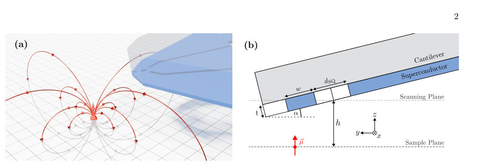
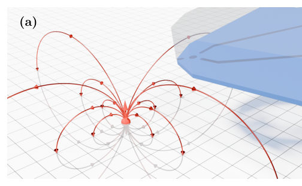
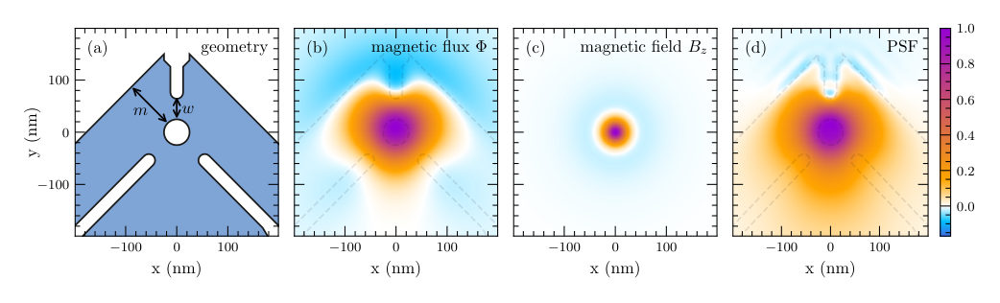
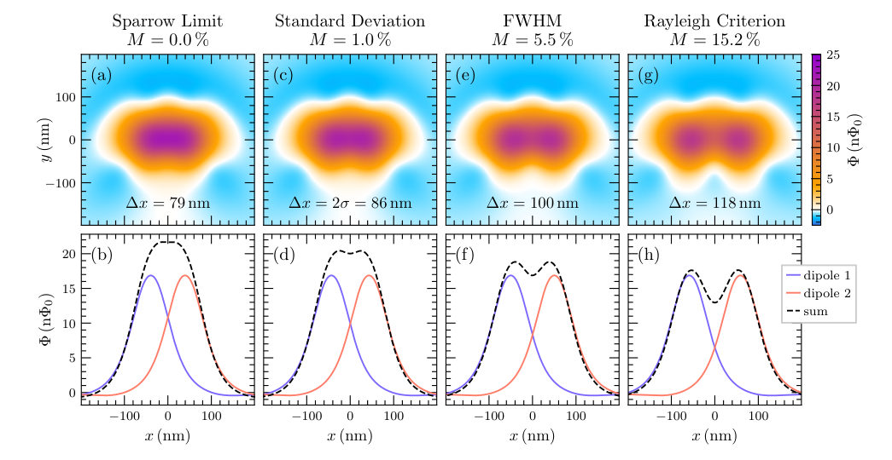
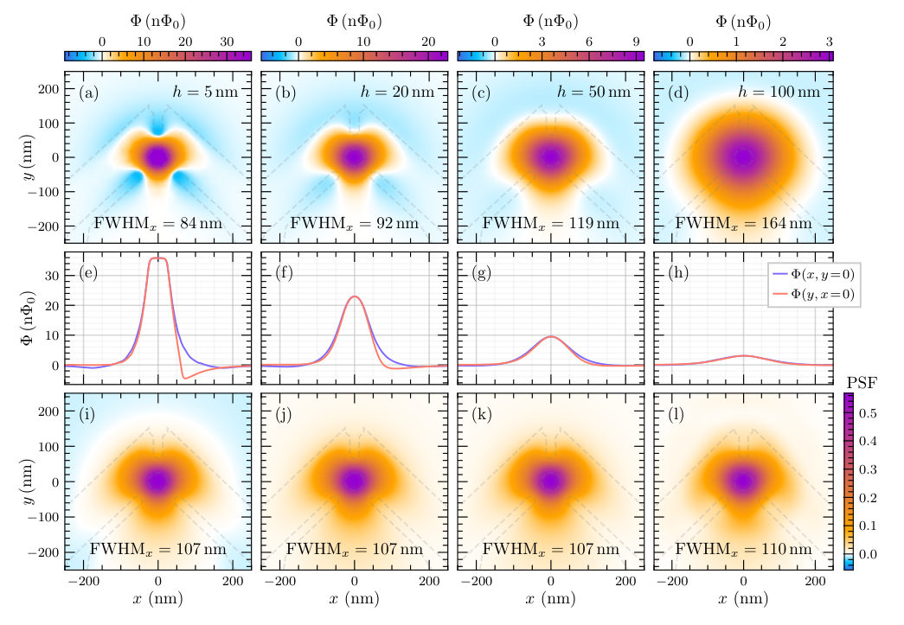
Summary. This work develops a comprehensive model to determine the Point Spread Function (PSF) of advanced Scanning SQUID Microscopy probes. By simulating magnetic flux coupling using superconducting circuit theory, the authors derive the PSF mathematically and validate it by comparing predictions against experimental measurements on magnetic skyrmions. This confirms the probe's intrinsic spatial resolution capabilities for nanoscale magnetic imaging.
Why it may be interesting. While focused on condensed matter magnetism, the rigorous treatment of spatial resolution limits via deconvolution techniques and the comparison between simulation and experiment is highly relevant for any field requiring high-fidelity measurement reconstruction from localized probes.
Main problem. The primary goal is to accurately determine the Point Spread Function (PSF) of high-resolution Scanning SQUID Microscopy (SSM) probes for optimizing magnetic field mapping and image reconstruction.
Main result. The study provides a mathematical description of the SOL PSF, which was successfully validated by showing excellent agreement between simulated flux responses and measurements taken over a single magnetic skyrmion.
Method. The research combines theoretical modeling using the Amperian-loop model (based on London theory) to simulate supercurrents and calculating the PSF via convolution/deconvolution techniques like the Landweber algorithm.
Model / system. The physical system is a Superconducting Quantum Interference Device (SQUID) patterned onto a lever tip (SOL architecture), used to map weak magnetic fields on samples like $ ext{Cu}2 ext{OSeO}_3$. The analysis relies on calculating the coupling factor ($\phi\mu$) from supercurrents.
Key observables. Point Spread Function (PSF), measured magnetic flux ($\Delta\Phi$), and spatial resolution quantified by FWHM.
Important parameters / regimes. SQUID size, sensor geometry, cantilever height ($h$), London penetration depth ($\lambda_L$).
Assumptions / limitations. The Amperian-loop model is used for supercurrent simulation; the Landweber inversion process is sensitive to noise and missing low-frequency components.
Figures summary. Figures illustrate schematics of the SOL probe, demonstrate PSF calculation from magnetic dipoles, and compare simulated vs. measured flux responses over skyrmions.
Paper structure. The paper progresses by first establishing the need for PSF knowledge in SSM; it then details the simulation methods (Amperian-loop/Biot-Savart) to derive the mathematical PSF description; finally, it validates this model by comparing simulations against direct measurements on magnetic skyrmions.
Superconducting quantum interference devices (SQUIDs) show exceptional sensitivity to magnetic flux. In scanning SQUID microscopy (SSM), SQUID size and its distance to the sample are minimized in order to map weak magnetic fields with best possible spatial resolution. SQUID-on-lever (SOL) architectures have proven especially effective as SSM probes due to their small sensor size, robustness, and ease of integration with conventional atomic force microscopy hardware. In order to optimize magnetic microscopy carried out with SOL probes and to accurately reconstruct the magnetic fields that they measure, it is essential to know their point spread function (PSF). The size and shape of this PSF are determined by magnetic flux focusing effects, which depend on the characteristic length-scales of the superconductor and the sensor geometry. By simulating the coupling to sources of magnetic flux, this work provides a mathematical description of the SOL PSF, which contains a full description of the probe's magnetic sensitivity and spatial resolution. We then use measurements of a single magnetic skyrmion to measure the magnetic flux response of a real SOL. We demonstrate excellent agreement with flux responses that are obtained from simulations, thereby confirming the calculated PSF and spatial resolution.
Authors: Anna Hassine, Amit Goft, Boris Rotstein, Eric Akkermans
Type: theory · Category: other · PDF: https://arxiv.org/pdf/2607.16965v1
Analysis basis: full PDF text, analyzed in chunks
Topic relevance: driven-dissipative phase transition 3/5 · non-equilibrium universality 2/5 · Kondo & dissipative impurity 1/5 · analog quantum simulation 1/5 · methods for driven-dissipative 1/5 · non-equilibrium dynamics 1/5
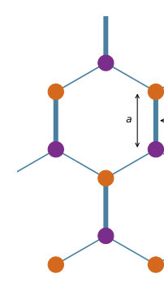
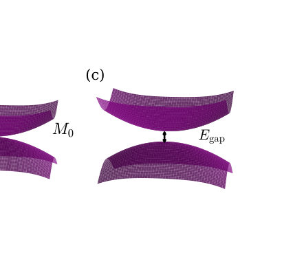
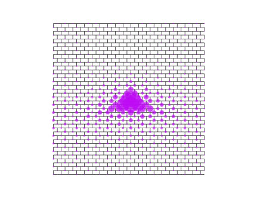
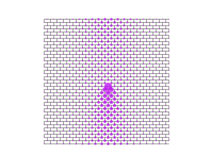
Summary. This paper demonstrates that a single vacancy can induce a topological phase transition in an anisotropic honeycomb lattice without requiring a bulk spectral gap closure. The transition occurs when Dirac valleys merge at $t'/t=2$, causing the defect's winding number ($ u_3$) to collapse from $\mp 1$ to $0$. This mechanism is diagnosed by observing sharp changes in zero-mode localization and topological invariants.
Why it may be interesting. This work provides a detailed mechanism for realizing topological transitions purely through defect engineering, bypassing conventional gap closing criteria and linking it to fundamental changes in the system's symmetry constraints ($d+D+1=2m$).
Main problem. The study investigates a topological phase transition driven by the annihilation of Dirac valleys caused by a single vacancy defect in an anisotropic honeycomb lattice.
Main result. The system undergoes a topological phase transition at $t'/t=2$, where the defect winding number $ u_3$ collapses from $\mp 1$ to $0$, driven by the reduction in active pseudospinor degrees of freedom ($m: 2 o 1$).
Method. The analysis uses tight-binding models, calculating topological invariants like the three-phase-space winding number ($ u_3$) and analyzing zero-mode profiles using diagnostics such as the Inverse Participation Ratio (IPR).
Model / system. The model is a two-dimensional honeycomb lattice described by an anisotropic nearest-neighbor tight-binding Hamiltonian. The physics is analyzed in the context of symmetry class BDI, focusing on the impact of a single vacancy defect.
Key observables. Topological winding number ($ u_3$), Active pseudospinor degrees of freedom ($m$), Inverse Participation Ratio (IPR), and wavefront dislocations in the local density of states (LDOS).
Important parameters / regimes. The anisotropic nearest-neighbor hopping ratio $t'/t$, with critical regimes analyzed at $t'/t < 2$, $t'/t = 2$, and $t'/t > 2$.
Assumptions / limitations. The analysis relies on the Nielsen-Ninomiya theorem for the pristine lattice and assumes the defect invariant $ u_3$ can be factorized into momentum and defect winding components.
Figures summary. Figures illustrate the anisotropic honeycomb structure, the merging of Dirac valleys at $t'/t=2$, the evolution of zero-mode probability density (from algebraic to confined), and plots showing IPR minima and LDOS dislocation disappearance at criticality.
Paper structure. The paper establishes the topological triviality of the pristine lattice due to valley pairing, then analyzes how a vacancy introduces $ u_3=\mp 1$ for $t'/t < 2$. The core argument focuses on the transition at $t'/t=2$, where valley merging causes $ u_3 o 0$, marking a bulk Lifshitz-driven topological phase change.
A single missing atom can drive a topological phase transition in a lattice that is otherwise trivial for all values of its parameters. We demonstrate this in a two-dimensional honeycomb lattice with anisotropic nearest-neighbor hopping ratio $t'/t$. The pristine lattice is topologically trivial for all $t'/t$ by the Nielsen-Ninomiya fermion-doubling theorem: Dirac valleys appear in pairs whose topological charges cancel identically in any bulk invariant. A single vacancy breaks this cancelation, acting as an internal boundary with defect winding number $ν_3=\mp 1$ for $t'/t<2$. At $t'/t=2$, the two Dirac valleys merge and annihilate; the number of active pseudospinor degrees of freedom drops from $m=2$ to $m=1$, violating the condition $d+D+1=2m$ required for a non-trivial winding number. The winding number collapses to $ν_3=0$: a topological phase transition within a fixed symmetry class (BDI), driven entirely by a bulk Lifshitz transition and observable only through the vacancy. The defect zero mode crosses over from algebraic (${\sim}1/r$) to stronger spatial confinement, with its inverse participation ratio reaching a sharp minimum at criticality. Wavefront dislocations in the local density of states provide a direct, spatially resolved image of $ν_3$, accessible in graphene and in photonic and cold-atom analogs.
Authors: Binchang Zhou, Pan Zhou, Baoru Pan, Yuzhong Hu, Songmin Liu, Lizhong Sun
Type: theory · Category: other · PDF: https://arxiv.org/pdf/2607.17209v1
Analysis basis: full PDF text, analyzed in chunks
Topic relevance: exotic spin models in light-matter 3/5 · spintronics-quantum-optics interface 3/5 · Keldysh / 2PI / non-Gaussian methods 1/5 · non-equilibrium dynamics 1/5
Summary. This work introduces the Layer Edelstein Effect (LEE), a symmetry-protected mechanism generating opposite layer-resolved spin magnetizations in bilayer systems using an in-plane current. By developing model-independent symmetry criteria, the authors prove LEE is generic for many nonmagnetic bilayers and confirm its feasibility on materials like MoSSe via first-principles calculations.
Why it may be interesting. While focused on condensed matter transport, understanding how symmetries dictate emergent spin responses in layered materials is crucial for designing quantum devices that rely on controlled spin-orbit coupling effects.
Main problem. The paper introduces and establishes the 'layer Edelstein effect' (LEE), a universal current-induced spin phenomenon in bilayer systems, as a counterpart to the layer Hall effect.
Main result. The LEE is shown to be a generic, symmetry-governed response realizable in a wide class of nonmagnetic bilayer stackings. It manifests through layer-resolved spin magnetizations with opposite components on top and bottom layers.
Method. The authors combine symmetry analysis with a general bilayer k.p theory framework to derive model-independent criteria for LEE existence.
Model / system. The study focuses on nonmagnetic bilayer systems, such as stacked MoSSe, MoTe2, and WTe2. The theoretical analysis uses group theory based on stacking operators ($\hat{P}$) applied to a minimal bilayer k.p Hamiltonian.
Key observables. Layer-resolved spin magnetizations with opposite components; the symmetry criteria for LEE realization ($\chi_{xy}$ vs $\chi_{yx}$).
Important parameters / regimes. In-plane charge current density ($\mathbf{j}_A$) and external electric field ($\mathbf{E}$); bilayer stacking symmetry (point group).
Assumptions / limitations. The analysis assumes that interlayer tunneling can be suppressed by weak coupling, symmetry selection rules, and electric-field detuning.
Figures summary. Figure 1 schematically illustrates LEE using the stacking operator; Figure 2 shows how breaking inversion symmetry via E leads to measurable spin responses ($\chi_{xy}$ vs $\chi_{yx}$).
Paper structure. The paper first introduces the concept of LEE, then establishes its general existence and symmetry criteria using group theory on bilayer systems. It details two universal manifestations (symmetry-mandated vs. field-activated) before confirming predictions via first-principles calculations on specific TMD bilayers.
Electrical control of magnetism represents a fundamental route toward next-generation spintronic functionalities. In this Letter, we introduce a universal current-induced spin phenomenon in bilayer systems, termed the layer Edelstein effect (LEE), which serves as the natural counterpart of the layer Hall effect in real space. It is defined by the emergence of layer-resolved spin magnetizations with opposite components on the top and bottom layers, driven by an in-plane charge current and controllable by an external electric field. We establish the general existence of the LEE using a minimal bilayer $k \cdot p$ theory. By combining symmetry analysis with a general bilayer stacking framework, we derive a model-independent symmetry criterion demonstrating that the LEE is generically allowed in a broad class of nonmagnetic bilayer stacking systems. We further show that the LEE admits two universal manifestations: explicit layer-opposite spin magnetization components mandated directly by symmetry, and components become activated upon symmetry reduction by external electric fields. First-principles calculations on stacked bilayer MoSSe, MoTe$_2$ and WTe$_2$ confirm the predicted effect and illustrate their experimental feasibility. Our work establishes the LEE as a generic symmetry-governed response of bilayer systems, providing a unified conceptual framework for electrically generating and manipulating layer-resolved spin polarization.
Authors: Valeria Nocerino, Francesca Di Carlo, Luca De Stefano, Principia Dardano, Carlo Forestiere
Type: both · Category: other · PDF: https://arxiv.org/pdf/2607.16525v1
Analysis basis: full PDF text, analyzed in chunks
Topic relevance: interference shaping light 3/5 · Keldysh / 2PI / non-Gaussian methods 1/5 · analog quantum simulation 1/5 · correlated / nonlocal dissipation 1/5 · driven-dissipative phase transition 1/5 · methods for driven-dissipative 1/5
Summary. This work analyzes plasmonic resonances in Au-coated Ag nanoislands, demonstrating that their optical response exhibits robust Fano-like antiresonances. By simulating and measuring the effect of coating thickness, the authors show this system provides a simple, scalable platform for tuning these interference features using standard far-field spectroscopy.
Why it may be interesting. While focused on classical electromagnetism (plasmonics), the concept of destructive quantum-like interference (Fano resonance) between hybridized modes is highly relevant to open quantum systems and cavity QED studies involving engineered dissipation channels.
Main problem. The study investigates robust Fano-like antiresonances in plasmonic systems using Au-coated Ag nanoisland ensembles, aiming to establish these structures as tunable platforms for optical response.
Main result. Increasing the Au-coating thickness shifts the low-energy resonance while leaving a pronounced anti-resonant dip nearly fixed, demonstrating tunability via simple fabrication methods.
Method. The research combines electrostatic spectral analysis and full-wave electromagnetic simulations with experimental linear transmission spectroscopy measurements.
Model / system. The physical system is Au-coated Ag nanoisland ensembles (bimetallic nanostructures). The theoretical model uses a boundary-integral equation approach solved in the quasi-electrostatic limit to analyze mode hybridization.
Key observables. Plasmonic resonances, Fano-like antiresonant dips, spectral weight transfer, and the electric dipole moment $p( ilde{\omega})$.
Important parameters / regimes. Au-coating thickness ($t$), plasma frequency mismatch parameter ($\delta$), and geometry ratio ($t/r$).
Assumptions / limitations. The analysis is performed within the quasi-electrostatic limit, neglecting retardation effects.
Figures summary. Figures schematically show the nanoisland structure with defined domains (island, coating, exterior) and illustrate spectral responses showing resonance shifts and fixed anti-resonant dips as a function of material parameters.
Paper structure. The paper progresses from establishing the general context of bimetallic plasmonics to developing the theoretical framework using boundary integrals. It then analyzes how key parameters like coating thickness and plasma mismatch ($\delta$) control the resulting Fano interference features, culminating in experimental validation.
We investigate plasmonic resonances and Fano-like interference in Au-coated Ag nanoislands fabricated by solid-state dewetting followed by Au overgrowth. By combining electrostatic spectral analysis, full-wave simulations, and linear transmission spectroscopy, we show that the optical response is governed by hybridization between plasmonic modes supported by the Ag-island and the Au-coating. Increasing the Au-coating thickness red-shifts the low-energy resonance and transfers spectral weight from high-energy to low-energy resonances, while a pronounced anti-resonant dip remains nearly fixed. The eigenmode analysis identifies this dip as the signature of destructive interference between super-radiant and sub-radiant hybridized modes. These results establish coated bimetallic nanoislands as promising platforms for tunable Fano-like optical responses accessible through standard far-field spectroscopy, using a fabrication route that requires no lithographic patterning and is compatible with large-area, low-cost production.
Authors: Sushmita Saha, Alestin Mawrie
Type: theory · Category: other · PDF: https://arxiv.org/pdf/2607.17676v1
Analysis basis: full PDF text, analyzed in chunks
Topic relevance: Keldysh / 2PI / non-Gaussian methods 3/5 · Kondo & dissipative impurity 1/5 · analog quantum simulation 1/5 · methods for driven-dissipative 1/5 · non-equilibrium dynamics 1/5
Summary. This paper derives an analytical theory for Landau quantization in Dirac fermions exhibiting both structural anisotropy (tilt) and subjected to a decaying magnetic field. By employing Lorentz covariance, the complex problem is mapped to a solvable isotropic form, yielding a unique, energy-dependent quantization condition that describes the system's spectrum.
Why it may be interesting. While focused on condensed matter band structure, the use of Lorentz covariance and exact solutions for inhomogeneous fields provides powerful mathematical tools applicable to open quantum systems or field theories where background geometry/fields are non-uniform.
Main problem. The paper develops an analytical theory for Landau quantization applied to tilted anisotropic Dirac fermions subjected to a spatially varying, exponentially decaying magnetic field.
Main result. It establishes a unified Lorentz-covariant framework yielding an implicit, energy-dependent quantization condition for the laboratory spectrum, which successfully recovers known uniform-field limits.
Method. The core method involves mapping the complex anisotropic problem into an isotropic Dirac equation via anisotropy scaling and a Lorentz boost, allowing for exact solution techniques involving confluent hypergeometric functions.
Model / system. The system models low-energy quasiparticles in tilted anisotropic Dirac materials (like borophene) governed by a Hamiltonian incorporating $v_x, v_y$, and tilt terms. The magnetic field is modeled as $B(x) = B_0 e^{-\lambda x}$.
Key observables. The Landau-level spectrum ($ ilde{E}_n$ vs $ ilde{k}_y$), the guiding-center parameter ($S$), and the resulting two distinct, asymmetric branches (Branch I and Branch II).
Important parameters / regimes. Magnetic decay length scale ($\lambda^{-1}$), anisotropy parameters ($v_x, v_y$), and the tilt term $v_t$.
Assumptions / limitations. The analysis requires careful handling of spurious roots introduced by squaring the eigenvalue equation, necessitating adherence to physical admissibility constraints.
Figures summary. Figure 1 illustrates the Lorentz-covariant mapping from tilted anisotropic cones to an isotropic Dirac Hamiltonian. Figure 2 contrasts the symmetric spectrum in the boosted frame with the resulting asymmetric, two-branched spectrum in the laboratory frame.
Paper structure. The paper proceeds by defining the physical system and Hamiltonian, applying a Lorentz transformation/anisotropy scaling to map it to a solvable isotropic problem (Whittaker/Kummer equation), solving for the boosted spectrum, and finally transforming back to the lab frame to derive the implicit quantization condition.
We develop an analytical theory of Landau quantization for tilted anisotropic Dirac fermions in an exponentially decaying magnetic field. Using anisotropy scaling and a Lorentz transformation, we recast the laboratory-frame problem into the isotropic Dirac equation in the boosted frame, where the exponentially decaying magnetic-field problem admits an exact solution. Transforming the boosted-frame spectrum back to the laboratory frame yields an implicit quantization condition with an intrinsically energy-dependent guiding-center parameter. We identify the conditions for physically admissible states. We further show that the formalism recovers the known uniform-field spectrum of tilted anisotropic Dirac fermions in the appropriate limit. Our results establish a unified Lorentz-covariant framework for describing Landau quantization in tilted anisotropic Dirac materials in the presence of an exponentially decaying magnetic field.
Authors: Varsha Subramanyan, Shi-Zeng Lin, Avadh Saxena
Type: theory · Category: other · PDF: https://arxiv.org/pdf/2607.17064v1
Analysis basis: full PDF text, analyzed in chunks
Topic relevance: Keldysh / 2PI / non-Gaussian methods 3/5 · methods for driven-dissipative 1/5 · non-equilibrium dynamics 1/5
Summary. This paper theoretically analyzes sound attenuation in double-Weyl semimetals, demonstrating that the damping mechanism is purely geometric due to Fermi surface deformation. This contrasts sharply with simple Weyl semimetals, where a different axial coupling dominates. The findings establish a new diagnostic tool for characterizing topological electronic states using acoustic measurements.
Why it may be interesting. This work provides a detailed theoretical link between crystal lattice dynamics (sound waves/strain) and topological electronic structure (Weyl nodes), offering insights into how geometry dictates transport properties in novel quantum materials.
Main problem. The study investigates the mechanism by which sound waves cause energy attenuation in double-Weyl semimetals (DWSMs) compared to simple Weyl semimetals (WSMs). The core goal is to identify a novel, purely geometric contribution to this damping.
Main result. In DWSMs, sound attenuation is dominated entirely by the deformation of the Fermi surface geometry due to strain. This mechanism is fundamentally different from WSMs because the characteristic axial coupling present in simple WSMs vanishes in the double-Weyl case.
Method. The authors employ a semi-classical approach using the Boltzmann transport equation to calculate the rate of change of energy ($Q$) induced by dynamic strain, leading to the attenuation coefficient ($\Gamma$).
Model / system. The system is modeled as a double-Weyl semimetal described by a low-energy Hamiltonian modified by strain. The analysis compares this behavior against simple Weyl semimetals and utilizes concepts like the quantum geometric tensor ($g_{ij}$) to quantify strain effects.
Key observables. Sound attenuation coefficient ($\Gamma$), energy shift ($\delta E$), and the inter-node scattering rate ($\Lambda(E)$).
Important parameters / regimes. Strain tensor components ($u_{ij}$), Grüneisen parameter ($\gamma$), sound frequency ($\omega$), and Fermi surface geometry parameters.
Assumptions / limitations. The analysis assumes slow-moving sound waves ($\omega au^* \ll 1$) and relies on semi-classical approximations derived from the Boltzmann transport equation. The dominance of geometric effects is assumed over other coupling mechanisms.
Figures summary. Figure 1 illustrates the change in Fermi surface geometry under strain, showing transitions from unstrained to nematic shapes during sound passage for a DWSM.
Paper structure. The paper develops by first establishing the general framework for calculating energy loss due to strain. It then contrasts the coupling mechanisms between simple WSMs (axial coupling) and DWSMs (geometric deformation). Finally, it derives the specific geometric contribution to $\Gamma$ unique to DWSMs.
The axial coupling of strain to the nodes of the simple Weyl semimetals leads to anomalous contributions to sound attenuation in such materials. However, in double Weyl semimetals, there is no such axial coupling. Strain instead couples as a symmetry-breaking director field that deforms the Fermi surface around each Weyl node. In this work, we show that absence of axial coupling in double Weyl semimetals implies a very different mechanism of relaxation due to sound. The deformed geometry of the Fermi surface is the only source of sound attenuation under these conditions. Thus, we identify a geometric contribution to sound attenuation in double Weyl semimetals that is entirely absent in simple Weyl semimetals.
Authors: C. O. Ascencio, D. J. P. de Sousa, Seungjun Lee, Tony Low
Type: theory · Category: other · PDF: https://arxiv.org/pdf/2607.17392v1
Analysis basis: full PDF text, analyzed in chunks
Topic relevance: spintronics-quantum-optics interface 3/5 · Keldysh / 2PI / non-Gaussian methods 1/5
Summary. This work theoretically classifies how magnetoelectric electro-optic effects manifest in noncentrosymmetric metals by analyzing three key response tensors: D, K, and G. By applying symmetry constraints, the authors pinpoint specific crystal symmetries where the desired G-driven effect can be isolated from other contributions (D and K). This provides a powerful roadmap for experimentalists to observe these exotic quantum phenomena.
Why it may be interesting. While focused on solid-state physics, the rigorous use of symmetry constraints to predict measurable quantum responses (like chirality or magnetoelectric coupling) is highly relevant to understanding engineered quantum materials for quantum optics applications.
Main problem. The paper aims to classify symmetry-constrained forms of Berry curvature dipole (D), gyrotropic magnetic (K), and magnetoelectric electro-optic (G) tensors in noncentrosymmetric metals.
Main result. They identify 11 space groups where D and K vanish by symmetry while the G-driven magnetoelectric EO effect remains allowed, providing a cleaner experimental route for observation.
Method. The methodology combines rigorous symmetry analysis using group theory (TENSOR program) with first-principles calculations to predict observable optical responses.
Model / system. The study focuses on metallic optical and electro-optic effects in time-reversal symmetric, noncentrosymmetric metals operating in the low-frequency intraband regime. The response is governed by three key tensors: D, K, and G.
Key observables. Bias-induced circular dichroism (CD) with a characteristic sin(theta)cos(theta) angular dependence; helicity-even absorption/gain corrections.
Important parameters / regimes. Low-frequency intraband regime ($\omega au \gg 1$, $\omega \ll \epsilon_{ ext{gap}}/\hbar$); crystal symmetry (Space Groups).
Assumptions / limitations. The analysis assumes time-reversal symmetry and relies on the mathematical formalism connecting optical response to specific tensor symmetries.
Figures summary. FIG. 1 schematically illustrates the distinct EO responses associated with D, K, and G; FIG. 4 shows the schematic experimental setup for probing the G-driven EO response in GaAs and Te.
Paper structure. The paper develops from general theory of optical conductivity tensors to symmetry classification, identifying specific material symmetries where the desired G-driven effect can be isolated experimentally by controlling polarization and geometry.
We classify the symmetry-constrained forms of the Berry curvature dipole $\mathbf{D}$, gyrotropic magnetic tensor $\mathbf{K}$, and magnetoelectric electro-optic (EO) tensor $\mathbf{G}$, which describe metallic optical and EO effects in time-reversal symmetric, noncentrosymmetric metals. We identify 11 space groups (SGs) in which $\mathbf{D}$ and $\mathbf{K}$ vanish by symmetry while $\mathbf{G}$ remains allowed, thereby providing a more direct route to observing the recently predicted magnetoelectric EO effects associated with $\mathbf{G}$. First-principles based calculations confirm that $\mathbf{D}$ and $\mathbf{K}$ vanish for representative materials, while $\mathbf{G}$ remains allowed and tunable via Fermi level shifting. We further show that the choices of SG and experimental configuration provide complementary paths for isolating $\mathbf{G}$-driven EO effects, including cases where $\mathbf{D}$ and $\mathbf{K}$ are also symmetry-allowed. In an oblique-incidence geometry, the $\mathbf{D}$-driven response produces a helicity-even absorption or gain correction, whereas the $\mathbf{G}$-driven response couples the $s$ and $p$ optical sectors and produces a bias-induced circular dichroism with a characteristic $\sinθ\cosθ$ angular dependence. This provides a direct experimental route for separating the $\mathbf{D}$- and $\mathbf{G}$-driven EO signatures in noncentrosymmetric metals.
Authors: Francis F. Franco, Gabriel de T. Paula, Roman Chertovskih, Dalton N. Oliveira, Erico L. Rempel
Type: theory · Category: other · PDF: https://arxiv.org/pdf/2607.17918v1
Analysis basis: full PDF text, analyzed in chunks
Topic relevance: driven-dissipative phase transition 2/5 · non-equilibrium dynamics 2/5 · non-equilibrium universality 2/5 · Frenkel-Kontorova 1/5 · Keldysh / 2PI / non-Gaussian methods 1/5 · analog quantum simulation 1/5 · correlated / nonlocal dissipation 1/5 · entanglement & information structure 1/5 · methods for driven-dissipative 1/5
Summary. This work numerically investigates magnetoconvection in 2D Rayleigh-Bénard convection to understand the role of an external magnetic field on the transition to chaos. The key finding is that the magnetic field enhances chaotic roll behavior and facilitates vortex splitting through magnetic reconnection events during flow instabilities. This provides a detailed, non-linear fluid dynamics model for understanding turbulence onset.
Why it may be interesting. While focused on classical fluid dynamics (MHD), the study of pattern formation, chaos transition routes (e.g., crisis mechanisms), and localized energy dissipation/reconnection events shares mathematical parallels with non-equilibrium quantum field theories or open quantum systems exhibiting complex dynamics.
Main problem. The study investigates how an externally imposed magnetic field influences the transition from ordered convective flow to chaos in two-dimensional Rayleigh-Bénard convection (RBC). It specifically examines the role of this magnetic field on the onset and nature of turbulent behavior.
Main result. Introducing a background magnetic field increases chaotic traveling roll dynamics and promotes the breaking/splitting of convective rolls, suggesting a mechanism for transitioning to 2D turbulence. This process is linked to intermittent magnetic vortex splitting via reconnection during saddle-roll interactions.
Method. The analysis relies on numerical simulations using pseudospectral methods to solve non-dimensional magnetohydrodynamic equations. Diagnostics include Finite-Time Lyapunov Exponents (FTLE), Instantaneous Vorticity Deviation (IVD), and Local Current Deviation (LCD).
Model / system. The system is two-dimensional, incompressible, electrically conducting fluid undergoing Rayleigh-Bénard convection under the influence of a uniform background magnetic field ($\mathbf{B}_0$). The dynamics are governed by modified Boussinesq approximations.
Key observables. Traveling rolls dynamics, chaotic behavior, vortex structures (kinetic and magnetic), bifurcation points, and reconnection events.
Important parameters / regimes. Reduced Rayleigh number ($r$), Chandrasekhar number ($Q$, related to $\mathbf{B}_0$), Prandtl number ($Pr$), and magnetic Prandtl number ($Pm$).
Assumptions / limitations. The analysis is restricted to a two-dimensional formulation, which simplifies the study of topological dynamics compared to full 3D MHD turbulence.
Figures summary. Figures illustrate velocity IVD and magnetic LCD alongside streamlines at specific times, highlighting saddle point/roll interactions and non-colliding vortex structures during reconnection events.
Paper structure. The paper first establishes the baseline chaotic transition in the purely hydrodynamic case ($Q=0$). It then systematically introduces $\mathbf{B}_0$ ($Q>0$), analyzing how this field alters the dynamics, promoting roll breaking and detailing the topological changes associated with magnetic reconnection during flow interactions.
The impact of an externally imposed magnetic field on numerical simulations of two-dimensional Rayleigh-Bénard convection (RBC) is investigated. Initially, the RBC model is examined in the absence of a magnetic field to establish a baseline. Then, a background magnetic field is introduced, and its influence on the transition to chaos is explored. For the purely hydrodynamic case and a range of the reduced Rayleigh number, the system exhibits traveling rolls which, after an attractor-merging crisis, give way to chaotic traveling rolls. Upon imposing a background magnetic field, there is a notable increase in the occurrence of traveling roll dynamics. Furthermore, the presence of the magnetic field favors the splitting/breaking of convective rolls, indicating a possible mechanism for transition to two-dimensional turbulence, with the structure of the convection cell being disrupted. A detailed analysis of the velocity field reveals that the collision between a saddle point and the center of a convective roll restores the system's original topology, with two symmetric kinetic vortices. During this collision, a magnetic vortex splits in two as a result of a magnetic reconnection. This behavior occurs intermittently in time.
Authors: Giorgio De Simoni, Francesco Giazotto
Type: theory · Category: other · PDF: https://arxiv.org/pdf/2607.17992v1
Analysis basis: full PDF text, analyzed in chunks
Topic relevance: QC/QI experiment 2/5 · driven-dissipative phase transition 2/5 · methods for driven-dissipative 2/5 · Keldysh / 2PI / non-Gaussian methods 1/5 · non-equilibrium dynamics 1/5 · spintronics-quantum-optics interface 1/5
Summary. This work proposes a novel frequency comb generator utilizing a gate-tunable Josephson field-effect transistor. By electrostatically tuning the junction parameters, the device achieves direct electrical control over the comb's spacing and frequencies. This platform is shown to be scalable and robust, making it valuable for next-generation cryogenic quantum information and sensing applications.
Why it may be interesting. While focused on microwave electronics, the concept of controlling quantum oscillations (Josephson junctions) via external fields and achieving high spectral purity is highly relevant to superconducting circuit QED and quantum sensing architectures.
Main problem. The primary goal is developing a compact, scalable, and electrically tunable microwave frequency comb generator for cryogenic quantum technologies.
Main result. The proposed Josephson field-effect transistor oscillator successfully generates coherent voltage pulses whose Fourier spectrum forms a microwave frequency comb, with demonstrated coverage up to 10 GHz using Al/InAs and extended bandwidth using Nb electrodes.
Method. The analysis relies on time-domain circuit simulations solving the Resistively Shunted Josephson Junction (RSJ) model for a gate-tunable Superconductor–Normal metal–Superconductor (SNS) junction.
Model / system. The system is an SNS Josephson field-effect transistor operating in a relaxation-oscillation regime. The normal region is a 2DEG whose carrier density can be electrostatically tuned via a gate electrode, allowing control over the critical current and inductance.
Key observables. Coherent voltage pulses forming a microwave frequency comb; mode frequencies ($f_j$) and spacing; peak power ($P_j$); oscillation period ($ au$).
Important parameters / regimes. Gate voltage ($V_g$), superconducting gap ($\Delta(T)$), operating temperature ($T$), ballistic channel number ($N$).
Assumptions / limitations. The junction operates in the ballistic short-junction approximation; an RSJ model is used, and hysteresis is managed by adding a shunt resistor.
Figures summary. Figures illustrate the dependence of critical current and resistance on gate voltage (Al/InAs), the time-domain response showing relaxation oscillations, and comparative performance plots for Niobium electrodes showing extended frequency spans and power scaling with $V_g$.
Paper structure. The paper introduces the concept by detailing the physical platform (gate-tunable SNS junction) and its theoretical modeling using the RSJ circuit. It then presents simulations demonstrating tunable comb generation, followed by an extension to higher-$T_c$ superconductors like Niobium to enhance performance.
Microwave frequency combs constitute promising resources for quantum technologies, cryogenic electronics, and multiplexed sensing architectures. In this work, we propose a frequency-comb generator based on a Josephson field-effect transistor operated in a relaxation-oscillation regime. The device comprises a gate-tunable ballistic superconductor-semiconductor-superconductor junction embedded in a resistively shunted circuit, in which electrostatic control of the carrier density enables in situ tuning of both the critical current and the Josephson inductance. Time-domain circuit simulations indicate that the resulting oscillator produces coherent voltage pulses whose Fourier spectrum forms a microwave frequency comb. In contrast to conventional Josephson-based comb architectures, the proposed platform provides direct electrical control of the comb spacing, emission frequencies, and modal power distribution via a gate electrode. For a representative Al/InAs implementation, we demonstrate continuous frequency coverage in the technologically relevant 1-10 GHz range. Furthermore, the concept is shown to be compatible with higher-$T_c$ superconductors, underscoring its potential as a compact and scalable microwave source for cryogenic quantum information and sensing applications.
Authors: Zi-Jie Yan, Hongtao Rong, Yiyuan Luo, Yufei Zhao, Pu Xiao, Zihao Wang, Lok-Kan Lai, Annie G. Wang, Zhiyuan Xi, Yanxing Li, Xiaoyu Wei, Ke Wang, Binghai Yan, Chih-Kang Shih, Cui-Zu Chang
Type: both · Category: other · PDF: https://arxiv.org/pdf/2607.17539v1
Analysis basis: full PDF text, analyzed in chunks
Topic relevance: analog quantum simulation 2/5 · spintronics-quantum-optics interface 2/5 · Keldysh / 2PI / non-Gaussian methods 1/5 · Kondo & dissipative impurity 1/5 · QC/QI experiment 1/5 · driven-dissipative phase transition 1/5 · methods for driven-dissipative 1/5
Summary. This work investigates superconductivity in $ ext{Pb}_{1-x} ext{Sn}_x ext{Te}/ ext{FeTe}$ bilayers, where the top layer undergoes a controlled topological phase transition. By measuring superconducting properties and superfluid stiffness, the authors conclude that the superconductivity is robustly confined to the interface region, suggesting its mechanism is intrinsic to the $ ext{FeTe}$ component rather than the topology of the adjacent material.
Why it may be interesting. While primarily condensed matter physics, the study involves engineered interfaces and superconducting phenomena that can be relevant to quantum computing platforms utilizing topological superconductors or Majorana zero modes at boundaries.
Main problem. The study investigates interface-induced superconductivity in $ ext{FeTe}$-based heterostructures, specifically addressing how the topology and electronic structure of neighboring layers influence this superconducting state.
Main result. Superconductivity is robust across a topological phase transition in the adjacent layer ($ ext{Pb}_{1-x} ext{Sn}_x ext{Te}$), suggesting that superconductivity originates primarily from modifications within the $ ext{FeTe}$ layer itself, confined near the interface.
Method. The research combines experimental techniques like MBE growth, ARPES for electronic structure mapping, and double-coil mutual inductance measurements to probe superfluid stiffness. Theoretical calculations are used to model the topological transitions in the adjacent material.
Model / system. The physical system is $ ext{Pb}_{1-x} ext{Sn}_x ext{Te}/ ext{FeTe}$ bilayers, where $x$ tunes the electronic structure of the top layer from a trivial insulator to a topological crystalline insulator (TCI). The analysis focuses on the interplay between this tunable topology and superconductivity.
Key observables. Superconducting transition temperature ($T_c$), superfluid stiffness ($ ho_s$), evolution of Dirac surface states, and band gap closing/reopening across the composition range.
Important parameters / regimes. Sn concentration ($x$) in $ ext{Pb}_{1-x} ext{Sn}_x ext{Te}$, which drives the topological phase transition; bilayer thickness (analyzed for saturation effects).
Assumptions / limitations. The primary assumption is that superconductivity is interface-confined, suggesting its origin lies in the $ ext{FeTe}$ layer rather than being dictated by the bulk topology of the neighboring material.
Figures summary. Figures illustrate ARPES measurements showing Dirac cone emergence with $x$, and transport measurements demonstrating constant superfluid stiffness despite topological changes.
Paper structure. The paper first establishes the physical system and methods, then uses ARPES to map the topological transition in $ ext{Pb}_{1-x} ext{Sn}_x ext{Te}$, followed by electrical/inductance measurements confirming robust superconductivity insensitive to this transition, leading to the conclusion of interface confinement.
Interface-induced superconductivity in FeTe-based heterostructures provides a promising route toward topological superconductivity, yet the roles of the neighboring layers topology, symmetry, and electronic structure remain unresolved. In this work, we employ molecular beam epitaxy to grow Pb1-xSnxTe/FeTe bilayers and use angle-resolved photoemission spectroscopy to track the evolution of the Pb1-xSnxTe layer from a trivial insulator to a topological crystalline insulator hosting multiple Dirac surface states. Electrical transport measurements reveal robust superconductivity throughout the entire composition range, with a nearly constant superconducting transition temperature of ~12 K despite substantial changes in the electronic structure and topology of Pb1-xSnxTe. Double-coil mutual-inductance measurements further reveal comparable superfluid stiffness across the topological phase transition and nearly thickness-independent superfluid stiffness despite large variations in the constituent-layer thicknesses, demonstrating that superconductivity is confined near the interface. These results establish that superconductivity in FeTe-based heterostructures is largely insensitive to the topology, crystal symmetry, and detailed electronic structure of the neighboring layer, supporting a primary origin in modifications to the FeTe layer. The coexistence of interface-confined superconductivity and tunable multiple Dirac surface states in Pb1-xSnxTe/FeTe bilayers provides a versatile platform for exploring topological superconductivity and interactions among multiple Majorana zero modes.
← Index · ← Previous · Next →